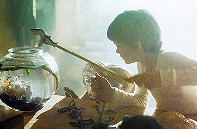
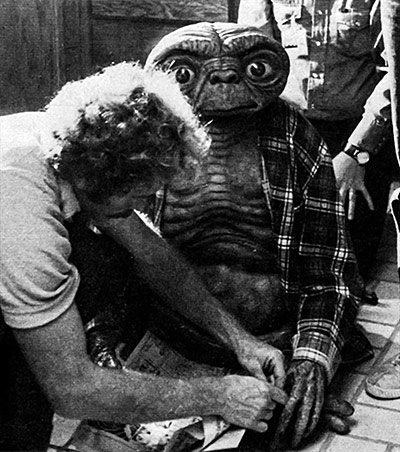
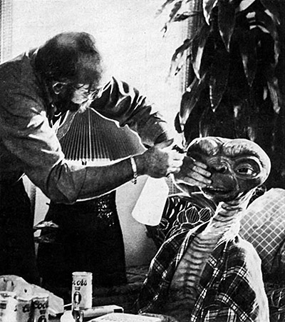
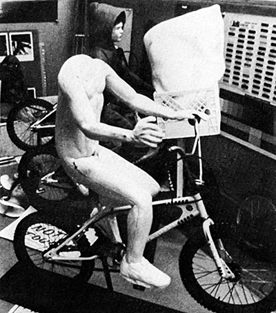
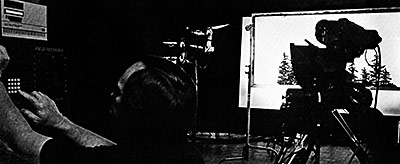

TURN ON YOUR HEARTLIGHT: INSIDE E.T.
Magic. Hugging. Tears. In a word, emotions.
Before the summer of 1982, any Hollywood trade paper predicting that the smash film of the year would owe its success to these qualities would have been dismissed as naively attempting to turn back the clock. And if that same publication had prophesied a nationwide love affair with a squat, wrinkled, mud-colored beastie with a perpetual chest cold, its subscribers would have suspected that the editorial staff had been sniffing too much of its own ink.
These hypotheses are by now, of course, purely academic. E.T., Steven Spielberg’s sixth theatrical project as a director, has not only managed to adroitly blend sentiment and aliens, but has evolved into a staggering financial and cultural phenomenon as well. “With the possible exception of Close Encounters of the Third Kind, E. T. is certainly closer to my heart than any other film I’ve ever done,” Spielberg has said, and more than 80 million ticket buyers have shared that warmth. Returning an impressive $11.9 million in its first weekend of release, E.T. then reversed the common trend of newly opened hits by increasing its grosses over the next 21 days: $12.4 million the next week, $12.8 million the second, and $14 million the third. And in the months after its premiere, the E.T. experience still includes waiting in long lines outside the theater — an irritating, communal, supremely human institution that inevitably signals a mega-hit.
Yet this is definitely one unpretentious blockbuster. Graced with a simple, affecting script by Melissa Mathison, showcasing the cable-based wizardry of Carlo Rambaldi, and dotted with subtle special effects provided by George Lucas’ Industrial Light and Magic, E.T. tells the humorous, moving story of a lonely young boy encountering a frightened alien botanist inadvertently stranded on an earth whose environment is hostile to its own biology. As the relationship between youngster and monster moves from fright to friendship — before deepening into love — the extraterrestrial is simultaneously tracked down by a squad of faceless, menacing authorities whose ticking, metronomelike pursuit gradually encroaches upon and threatens a unique interplanetary bond. Yet like director Frank Capra before him, Spielberg’s apparent belief in the essential strength and nobility of the “common” person overcomes faceless bureaucracy and culminates in a touching, bittersweet rescue and separation.
Obviously, a genre film banking on the hope that beneath today’s highly cultivated cynicism beats still sensitive hearts was something of a gamble. For all that, Spielberg obviously went to the right casino. E.T. is a palatable blend of solid screenplay, carefully prepared atmosphere, and throwaway references to the director’s own past projects. Spielberg even manages to get a laugh out of an Empire Strikes Back/Yoda hommage. More importantly, E.T. also offers a message of peace and understanding, ideas not usually found in “first-encounter” films. E.T. is clearly Spielberg’s affirmation that strangeness, or even ugliness, runs only skin deep. And that notion, like nearly all of Spielberg’s prior projects, has been taken up by a national consciousness. Spielberg’s films have grossed over $1 billion to date, and the 34-year-old director currently has three movies (Jaws, Raiders of the Lost Ark, E.T.) among the all-time top ten. Ironically, a fourth, Close Encounters, was edged off the list by E.T.
But despite his prior triumphs, E.T. was something special for Spielberg, as well as for his cast and crew. Already known for a firecracker-like ability to throw out idea after idea, Spielberg carefully guided E.T. from his own initial concepts to the final advertising and subsequent spin-off merchandising. In all aspects, E.T. was a purely personal film. “Actually, E.T. is an old idea of mine,” Spielberg said, “It’s a story I thought of years and years ago. At that time, I didn’t really have a shape or form of the alien in mind. It was just the kernel of a notion combining a little kid and a space creature, one springing from my own nerdy beginnings as an outsider who needed friends and never had that many when he was growing up. I can remember as a boy thinking something like: ‘Gee, if I could have a friend from anywhere on the face of the earth, I probably wouldn’t pick anybody on the face of the earth. In fact, I’d probably look elsewhere and not even stay in this galaxy.’ Of course, to a certain extent, my own Close Encounters inspired me to make E.T. I always thought it would have been easy for the little creature at Close Encounters’s climax to not return to his ship but go the other way and walk off into the hills. Besides, that scene with Puck was only four minutes long; I kept wondering what would happen if Puck had stayed and become friends with the Neary family and moved right in.”
These Spielbergian recollections emanated from his new Amblin’ Productions facility — a comfortable, informal assemblage of offices and bungalows on The Burbank Studios lot, named after the breakthrough short which enabled Spielberg to sign his first contract with Universal Pictures at age 21. The Amblin’ Productions logo is, not surprisingly, a full moon painted in blue across the face of which rides a bicycle-mounted Elliott and E.T. Spielberg’s own office is large but unassuming, dotted with relaxing furniture, a grand piano and numerous E.T. paraphernalia, including reviews, one-sheets and original art from the many inevitable editorial cartoons spotlighting E.T. as the artist’s social commentator. In one corner stands a full-scale bicycle similar to the one ridden by child actor Henry Thomas in the film; in another is piled rare original animation cels from Pinocchio which Spielberg, an avid collector, has recently purchased through an auction in New York City. And in a small anteroom just off his office is Spielberg’s well-known collection of popular video arcade games — mental pacifiers which are seemingly never long unattended by the director and his staff.
Spielberg himself is as unforced as his production center.
It should be no coincidence that director Steven Spielberg strikes a pose reminiscent of the title character in the early Superman television series. With only six feature films to his credit — four of them blockbusters — the energetic young filmmaker has surfaced as the only billion dollar director in motion picture history. His most recent entry —
E.T. —
was not only the smash hit of the 1982 summer season, but also promises to unseat Star Wars as the most successful box-office attraction of all time.
Friendly, relaxed, articulate, the director wore a Raiders crew cap, his signature glasses, jeans and pink socks as he recounted the process by which E.T. evolved from a vague childhood idea to a full-blown phenomenon. “While I was shooting Raiders in the Tunisian desert in 1980,” Spielberg said, “I was pretty lonely. At that point, I really had nobody to talk to — no one to be intimate with really, except Harrison and his girlfriend Melissa Mathison. So I opened up to them a lot. One day, I came up with the idea of doing E.T. as my next film, so I gave Melissa some general thoughts on the direction a screenplay should take and asked her if she’d like to do the script. At first she said no. Melissa told me she wasn’t happy with anything she’d written lately. But then, a little later, during a car ride from Nefta to Sousse, Harrison and I managed to talk her into it. Melissa started writing on October 8, 1980, and about a year later we began shooting with an incredible screenplay — just a beautiful piece of work.”
Direct and indirect references to Peter Pan appear throughout the film. Were they intentional? “Absolutely,” Spielberg affirmed. “l’d also like to think that E.T. is this generation’s Wizard of Oz. But contrary to a lot of what’s been written about the film, there really were no conscious parallels to the Disney religion in E.T. E.T. is much closer to the classic Peter Pan books than it is to the animated versions of the stories. In fact, Close Encounters was my Disney movie — the little red UFO in there was Tinkerbell; ‘When You Wish Upon a Star’ ran over the final credits; and, certainly, the Devil’s Tower was intentionally modeled after the peak in Fantasia’s ‘Night on Bald Mountain’ sequence. But that Disney echo became a bane of existence when people read the first E.T. screenplay. They’d say, ‘This is nothing more than a Disney picture!’ Which is one of the reasons why the film wasn’t made at Columbia. Some of the people there felt E.T. was just going to appeal to little kids or to very old people, and miss the core audience completely. As a matter of fact, even Rick Baker — who, if he is not the most talented man in his field, is at least the equal of Carlo Rambaldi — when he found out I was changing the thrust of a script I’d developed called Night Skies into E.T. he said: ‘Hey, you’re turning a wonderfully scary movie into nothing more than a Disney film.’ And in a way, Rick was right. He made a good point. I had told him the new story too softly, in the same manner I might have told it to a small child before bed.”
In point of fact, Night Skies — a script written by scenarist/ director John Sayles and artist/production designer Ron Cobb — was a science fiction horror film. Night Skies would not only be instrumental in launching E.T., but functioned as a distinct influence on the Spielberg-produced Poltergeist, not to mention being possessed of its own peculiar, complicated history. One person intimately familiar with all three films was Mitchell Suskin, a longtime laborer in the effects field whom Spielberg selected as his effects coordinator on both E.T. and Poltergeist. “Mitch was my spy,” Spielberg grinned, “He was really the effects watchdog between us, Carlo and ILM. He inherited the task of having to oversee all our physical effects in the studio, Carlo’s magical effects in Northridge and the optical effects in Northern California. In other words, Mitch kept very close track of, and was in constant communication with, all of E.T.’s effects and effects people, and would report to (co-producer)Kathy Kennedy and me on exactly what was going on, and on how closely we were sticking to the budget in these areas.”
Night Skies had been based on a reportedly true incident that Dr. J. Allen Hynek had helped Spielberg research during their gathering of information on UFO sitings for Close Encounters of the Third Kind. Supposedly, in 1955, a Kentucky farm family had been terrorized by a group of aliens, and the Sayles/Cobb script had focused on eleven of these creatures. Subsequent whittling reduced the number to five. “After landing near an isolated farmhouse,” Suskin explained, “these things weren’t quite sure whether chickens, cows or humans were the intelligent ruling lifeform. The aliens themselves, for the most part, were portrayed as being moody and mysterious — and in the case of one alien named Scar, definitely menacing. There were also a lot of ambitious effects scenes in Skies, including aliens jumping up on tables, riding cattle and dissecting a cow — before deciding to dissect a human as well. You were never really fully aware of the aliens’ intent — whether they were just confused or downright nasty — but Night Skies definitely wasn’t as warm and friendly as E.T.
Ron Cobb had been originally suggested as the director of the Night Skies project. But the artist’s long presence in Spain as production designer for Conan the Barbarian ruled out this level of involvement. At this point Spielberg, himself overseas with Raiders, decided to helm the project personally. Suskin was subsequently assigned as an assistant to Doug Beswick. Beswick and Suskin would work directly under Night Skies effects supervisor Rick Baker, who would be responsible for the by-now five completely different designs and mechanical systems needed for the aliens to come to life on the screen. All of these men would be working from storyboards by Ed Verreaux, who had worked with Spielberg in the past and would later prepare the storyboards for E.T.
After setting up a Night Skies facility in the same building housing the American Werewolf in London effects unit, Baker, Beswick and Suskin, along with an additional crew of seven sculptors, moldmakers and plasterers, spent five months on Spielberg’s proposed new project. At the end of this time, a sculpted prototype of one of the aliens, as well as a prototype operating mechanism and nearly complete alien head and arm, had been constructed by the crew. However, Baker had found it difficult to establish a continuous line of communication between Los Angeles and the globe-hopping Spielberg. When the director finally returned from Europe after completing the Raiders shoot, that lack of communication had clouded Night Skies to a considerable degree.
“Steven looked at what we had done,” Suskin explained, “and felt that, given the time and amount of money we’d already spent, things just weren’t progressing as quickly as they should have been. Rick had also been running himself ragged dashing back and forth between Skies and An American Werewolf in London, to which he’d had a prior commitment; so that was a consideration, too. And by now, Steven had realized just how painfully ambitious the Night Skies aliens were. It’s hard enough to build one completely articulate alien and control system from scratch, let alone five completely different creatures and systems. So Steven decided to drop the number of aliens down to one and change the script. At that point, Rick left the project, and Carlo Rambaldi immediately stepped in to look over what progress had been made. This was towards the end of October 1980. But then the brakes were put on and the project was shelved. Night Skies was originally Columbia’s package, and they just didn’t want to pick up Melissa’s script. But by January 1st, Universal did and had. Although I was wrapped up in Poltergeist at the time, by July I found myself back on Steven’s new alien movie — which, at various times, was called A Boy’s Life, E.T. and Me, and E.T. — His Adventure on Earth. From that point onwards, it was a matter of getting E.T. into the can in time for its release date.”
According to Spielberg, however, economic imperatives alone had not dictated the Night Skies to E.T. scale-down. “When I realized that I’d sent five aliens across 150 light years to earth — which is the distance most scientists agree is probably the frontier of any alien intelligence — just to terrify and destroy human beings, I saw that I was doing nothing more than getting back to the old days of Earth Vs. the Flying Saucers, Invaders from Mars, and certainly War of the Worlds. And I really believe in my heart of hearts that any alien intelligence that has discovered nuclear energy and gotten past the tough three decades now facing our own civilization, one that has not destroyed itself with that discovery, one that has dedicated itself to technology and quantum leaps in science and space travel... well, to have them come all that way just to destroy crops and terrify this poor farm family and generally wreak havoc seemed kind of silly. So I abandoned Night Skies and returned to my old fallback story.”
Night Skies was not completely discarded, however. The element of a terrorized family was obviously transplanted to Poltergeist. Just as obviously, anyone familiar with Spielberg’s past work would realize that E.T.’s notion of blending creatures, sentiment and (particularly) children would appeal to the young director. “All the films I’ve made, including 1941, have had kids in them,” Spielberg said. “And some of my best days have been working with kids; because no matter how baroque the idea, children will unquestioningly do just about anything, whereas adult actors want to question things and put their feelings through their heads first. Children never put things through the head; it all comes right from the gut. The centrality of children in my films has been evolving. While I was making Close Encounters, Truffaut kept telling me; ‘You should make a movie with keeds, with keedsl’ After E.T., I think Francois will be fairly satisfied that I’ve done that.”
With script and story direction firmly agreed upon, Spielberg then proceeded to set up the E.T. financial structure. To keep costs down and avoid the possibility of a shutdown due to a proposed summer of ‘81 Directors Guild strike — one that never materialized — Spielberg decided to bypass traditional studio funding and set up E.T.’s financing independently through a major bonding company. “E.T. was a backyard production,” Spielberg emphasized. “It really was. We only used three sound-stages at Laird Studios in Culver City, which was the same lot where they shot Tom Sawyer and Gone With the Wind — David O. Selznick’s lot. During E.T., I was constantly reminded of the days when I was doing 8mm and 16mm productions, when I was using my friends and we were all contributing our time and our efforts just to do it. That’s what was fun with E.T. The film was surrounded by professionals, but they weren’t necessarily veterans. Allen Daviau, who shot Amblin’ and who’s a friend of mine — E.T. was the first feature he’d ever filmed. Carol Littleton, who edited E.T. — this was only her third feature. Kathy Kennedy, who co-produced — first movie. And Melissa’s second script was E.T. So, in a sense, many of us were definite newcomers.”
In a quiet moment during the location shooting, Spielberg spends time with his young star, Henry Thomas.
E.T. — holding a potted plant which, like himself, has been resurrected from the dead — takes a last, wistful look at his earth-born family before boarding his ship for other galaxies.
Mechanical effects maestro Carlo Rambaldi poses in an impromptu gallery of E.T. conceptual drawings. The alien’s final design was a close collaborative effort between director and effects technician.
“The main reason Steven was able to hold E.T.’s cost down to $11.5 million,” said production supervisor Frank Marshall, “was his ability to adjust and go with alternate ideas and directions. His knowledge of what things cost helped him, too. Steven is realistic and practical about filmmaking. He knows how to work efficiently. I’ve also found after working on three films with him (Marshall acted as producer on Raiders of the Lost Ark and Poltergeist, and is executive producer on the upcoming Twilight Zone feature) that if you put boundaries around Steven, he’s often more creative than if you tell him to go ahead and shoot anything he wants. One interesting new development in Steven is that after Raiders, he discovered that he really likes to work fast. During that film, he even said to me: ‘Don’t let me do over five takes. If I do, come up and whisper, ‘Wasn’t that first take good enough?’ “
E.T. also represented another departure from Spielberg’s traditional filmmaking methods. “I usually have about 2500 storyboards made up per film. I do like to be innovative on the set and change things around, but my storyboards are my security blanket; I can fall back on them. If I come in without them in the morning, it makes me very, very nervous. I get sweat behind the ears. So it was something of a personal risk to throw away the boards on E.T. I had boarded about forty percent of the film — mostly of the ship taking off at the end and beginning, of the bike chase and bike ride in the sky — but then, as I got heavily into it, I decided to abandon the E.T. boards. That was a radical departure for me, but I had the feeling the boards might force the child actors into stiff, unnatural attitudes, and I didn’t want that. I wanted them to be so spontaneous that if something natural did come up — something that was a gift from the gods — then we’d be able to use it without the storyboards saying we couldn’t. But I gotta tell you, it was terrifying. It was like that old actor’s nightmare of coming out on stage without knowing your lines and seeing that the whole audience is composed of a thousand enemies just waiting for you to fall flat on your face.”
Mathison’s screenplay, however, gave Spielberg no such qualms. “Her input was absolutely critical,” Spielberg said. “In fact, a number of people actually cried on reading her script. I cried. It’s very unusual for a screenplay — and a first draft at that — to hit so deep.” To translate Mathison’s scenario into three dimensions, Spielberg continued to hire a small, talented crew, beginning with Rambaldi, who was given three-quarters of E.T. ‘s overall $2 million effects budget to construct the titled alien. James Bissell was hired as the film’s production designer; Dale Martin would handle physical effects. Spielberg’s primary actors included ten-year-old Henry Thomas as E.T.’s pal, Elliott Taylor; Robert Macnaughton was signed as Elliott’s older brother; and Drew Barrymore, granddaughter of John Drew Barrymore, was cast as Elliott’s sister Gertie. Peter Coyote, who demonstrated a strong versatility in character roles for films like Southern Comfort and Endangered Species, was signed as Keys, the sole sympathetic authority figure. Dee Wallace, an actress already known for her genre work in The Hills Have Eyes and The Howling would play Mary Taylor, the children’s mother. Finally, Mathison and Harrison ford were tentatively cast in cameos as a school nurse and principal, but never appeared in the final cut.
Activity now geared up for the most critical aspect of the production — E.T.’s actual construction. Rambaldi had originally asked for ten months to complete the extensive electronic and mechanical details needed to bring the alien to life, but Spielberg countered with a six month time limit. Subsequently, E.T. began to come to life in March 1981, and was born 5000 man-hours later, in September of that year — two weeks ahead of schedule. “E.T.’s appearance had been firmly nailed down before actual construction ever began,” Spielberg said. “I went in knowing that I wanted him to be fat, under three-and-a-half feet tall, and have a long telescoping neck — one that could stretch up and down to such a point that you’d always believe he was a complete creature from outer space and not a midget in a styrofoam suit. I further realized that E.T. would have to be made with an eye towards intense detail. Unlike Puck, who only had to come in and take a little bow and walk off again, E.T. had to carry the movie in much the same way you’d expect Robert Redford or Jack Nicholson to carry the picture they’re starring in. When I was trying to develop E.T.’s look, I forced myself to not play it safe. I didn’t want this character to be too easy to love. I wanted horror at first sight, and then to develop it from there. Like the story, I thought it best to let the character earn the love. On the other hand, it’s a lot easier to want to hold the hand of a guy who’s shorter and uglier than you are.”
Besides the particulars of E.T.’s appearance, Spielberg had also developed a short synopsis dealing with the alien’s past life. “I made him, first, a botanist vegetarian. He never eats meat — only junk food, vegetables and Coors. E.T. also comes from a very wet, humid planet with probably twice the gravitational pull of earth. That’s why he’s short and close to the ground and looks something like a fly under a thumb or a frog what’s been sat on.”
E.T.’s design work had begun as early as December 1980, before Rambaldi again resumed and finished his artistic prototypes in February 1981 for a construction start date of March. “I always had every confidence that Carlo would be able to meet his deadlines,” Spielberg said. “During Close Encounters, he was brought in late, at the virtual last minute, and he said he’d deliver Puck in three months for $30,000 — which is exactly what he did. On E.T., Carlo had a contract that said E.T. himself would cost $l’/2 million and be ready for a September shoot. Sure enough, Rambaldi never spent any more money, and E.T. was ready on the day we needed him for a test.”
E.T. and his creator mull over some Rambaldi illustrations. Recognizing that his picture would be dependent upon a totally fabricated being, Spielberg earmarked $1.5 million of the film’s overall $10.5 million budget for E.T.’s development and construction. Two extremely versatile, cable-actuated mechanical aliens — with four interchangeable heads — were produced, augmented by a more modestly articulated suit worn by little people in the walking scenes. A handful of additional nonarticulated suits were fashioned for the opening and closing scenes where several E.T.s are featured together. (Photo © Maureen Lambray / Sygma)
Carlo Rambaldi, who emigrated from Rome to this country seven years ago, had a practical reason for working so closely with Spielberg on E.T.’s design. Although the screenplay was very specific concerning the alien’s expressions, body and arm movements, E.T. himself was never physically described in the script. Thus the alien’s singular body and wheezy, Sparklett’s water bottle voice became a full-fledged collaboration between technicians and director.
“My first idea for E.T.,” said Rambaldi, “concerned his neck and face. These were generated by a five-by-six foot painting I had done in 1952 of three women, one with an elongated face and neck, for an Italian film called Donne del Delta (alternately known in English as Women of the Delta and Delta of the Big River). After reading the script, I had also decided that at the beginning of E.T., the child is very frightened by this character. So I needed to make E.T. scary — but not too much, because the boy had to love the thing, too.” Rambaldi further decided to grace the creature with an ageless quality, one the 57-year-old mechanical effects maestro had determined would add to the creature’s overall mystery.
The next step for Rambaldi lay in sculpting a ten-inch-tall E.T. prototype in clay. “During this period,” Rambaldi explained, “Steven and I agreed to make E.T. thirty-six inches tall, with another four inches added to his height when he extended his neck. We also decided to exaggerate and elongate E.T.’s face and head away from his neck, so that he would not only look strange and odd, but also seem to project himself forwards towards whoever he was with. This way, he would always be making eye contact with that person.” Rambaldi prepared a number of drawings of E.T.’s profile, and then presented them to Spielberg, who chose the one he felt showed the head in best proportion to the rest of the body, “E.T.’s whole face somehow defied gravity,” said Spielberg, “and yet balanced itself without being nose-heavy — which was really a bit of improbable biological compromise.”
“Steven wanted E.T. not to be too aggressive,” Rambaldi elaborated, “so I gave him short legs and thin long arms. And one day when I showed the clay sculpture to him, Steven said: “Carlo, I love it, but the rump looks funny. Wait! Let’s do it like Donald Duck!’ So E.T. now has a Donald Duck behind on him.” Spielberg then shot a video test of the model and, pleased with the results, gave the go-ahead for full-scale construction.
“One of the first suggestions that was raised early on,” said Mitch Suskin, “concerned the possibility of doing E.T. as a Muppet-type, Yoda-type figure. But we soon realized that The Empire Strikes Back had gotten away with Yoda because he had been placed in a fantasy environment, and so it didn’t really matter if he had a bit of fantasy in his movements, too. E.T., on the other hand, had to work in conjunction with the real world. He had to be a lot more realistic. What’s more, E.T. had to perform so much longer than Yoda did that we didn’t really have any room to cheat.” Thus, visions of Muppets were quickly abandoned in favor of the same mechanical effects techniques Rambaldi had perfected in films such as Alien, The White Buffalo and King Kong — for which Rambaldi not only provided that much criticized forty-foot mechanical ape, but seven complexly articulated Kong heads worn by the film’s human performer. Rambaldi’s methods involve the use of mechanical joints and muscles connected to special enclosed cables, not unlike extra-flexible bicycle hand brake cables, which run from Rambaldi’s engineered creations to hand controls manipulated by offscreen operators. “Whenever you moved my E.T. controls mechanically, say ten degrees,” said Rambaldi, “on certain models this gave a signal to an interface motor to move the same distance, which in turn drove the cable in the model ten degrees. So the process begins mechanically, becomes electronic in the second step, and then becomes mechanical again once the cable moves the figure.”
At this point, Laurie Marems was hired to assist in the final sculpting of the clay E.T.’s arms and body. Plaster molds were then made by longtime Rambaldi associate Ralph Cobos, who also manufactured E.T.’s “skin” from a custom-formula polyurethane developed by Rambaldi. Composed of seven different components in its final stages, Rambaldi’s special latex can wrinkle and stretch just like real skin. “I decided to make E.T.’s skin first,” stated Rambaldi, “because then it was much easier to arrive at the exact dimensions of the cable-controlled mechanisms over which the skin had to fit.”
Rambaldi’s primary crew included technical supervisor Steve Townsend. “Steve was one of E.T.’s unsung heroes,” said Suskin, “a man who not only interpreted between us and Carlo, but was also the wunderkind behind the reality of a lot of Carlo’s concepts.” Bill Schepler engineered the electro-servo and control mechanisms, with Robert Townsend and Robert Avila contributing overall effects infielder work. The interior itself, which acted as the alien’s skeleton, was constructed of aluminum and steel; and as Rambaldi had done with another Alien in the film of the same name, E.T.’s skull was built up from fiberglass. A flexible polyurethane support was then fitted over the inner mechanism, which had also been encased at points with layered fiberglass. Then Rambaldi’s specially developed latex “skin” was loosely hung over the near-completed figure.
“1 made a number of E.T.s for the film,” Rambaldi explained. “Mainly, however, we depended on three different ones throughout the filming. One was a lightweight electro-mechanical form which we bolted to the stage floor and which was capable of thirty points of movement in the face and thirty more in the body. Another, more complicated, body was auto-electronic. When they needed a closeup or something sophisticated, they usually brought out the electronic E.T., which had eighty-six separate points of movement — the most I ever put into a figure. Even King Kong only had forty. And this electronic E.T. had a lot of servo boxes hanging off it and many more cables than the mechanical E.T.”
Venturing outside their starship, several E.T.s gather specimens of earth’s verdant plantlife. Although little people were used for these and other walking scenes, such footage represented only about fifteen percent of E.T.’s total on-screen time.
An aerial view of production designer Jim Bissell’s nocturnal forest setting, erected and photographed at Laird International Studios in Culver City.
When the alien craft is forced to make a hasty departure, a frightened E.T. is inadvertently left behind in the fog-shrouded forest.
The third suit, cableless and capable of only ten points of movement, was custom-designed and padded to be worn by little people for E.T.’s walking scenes. The other, non-walking shots — eighty-five percent of E.T.’s total screen time — exclusively featured the electronic and mechanical models. The primary “little people” suit was also fitted with radio-controlled arms. Finally, Rambaldi produced a number of simpler rubber suits worn by little people for those opening minutes in the forest when the alien crew quietly explores the area around the ship.
Rambaldi also supervised the construction of four E.T. heads, all of which could be removed and interchanged with the various bodies and all of which shared equally stretchable necks. “There was one mechanical head, one radio-controlled head and two electronic heads,” Rambaldi said. “One of those electronic models was a backup. The radio-controlled head, capable of only six points of movement, around the eyes and mouth, was worn on the little people suit. But whenever we went to a closeup, off came the radio-controlled head and on went the electronic one which, like the mechanical head, was capable of over thirty-five movements at the forehead, lips, eyes, eyebrows and tongue. I could also open and close the nose, or make it move up and down or left to right. I could make the eyelids go up and down or control the pulsations in his veins and jugular. And E.T., although he had very little dialogue in the final film, could have said anything. We had manufactured the lips to take up any position Steven wanted — all the vowels and consonants. We basically moved the lips, and then correlated them to the voice.”
“E.T. could have sung arias if he’d wanted to,” Spielberg enthused. “He was also capable of unlimited expressions and facial attitudes, just as any good actor is. E.T. could have played in any movie in a range of roles — from John Wayne parts to Freddie Bartholomew parts — and he would not have exhausted his emotional capabilities.” Besides his marvelously expressive mouth, most of E.T.’s personality is conveyed through his large, striking eyes. “I really wanted the eyes to be very important,” Spielberg continued, “something of a cross between the eyes of Einstein, Sandburg and Hemingway. Carlo also had a Himalayan cat at home whose eyes he liked, so that became another input. We did all kinds of police composites to get the right look on E.T.’s face. In fact, I actually took a picture of a five-day-old baby and attached its nose and chin to a cutout photo of Einstein showing just the area above his nose to his forehead. The result was wonderful — an amazing combination of embryonic innocence and wizened ancestry.”
Manufacturing the eyes, however, was not as straightforward. Rambaldi was finding his dwindling production schedule being overwhelmed by the process of building the E.T. suit and heads, so responsibility for the alien eye construction was directed outside the production unit. First to be contacted was the Jules Stein Eye Institute at UCLA. However, when it became apparent that the Institute was not progressing with the project as quickly as needed, E.T.’s eyes were finally finished and painted by Beverly Hoffman of Ocular Prosthetics, working from Rambaldi’s designs and specifications. Rambaldi himself designed and installed special irises which could dilate or contract through the aid of small cable-controlled diaphragms. The dilating irises can be seen interacting with the surrounding light in the scene where E.T. heals Elliott’s cut hand with a magically glowing fingertip.
However ingeniously engineered, the E.T. eyes were still not completely perfect. “Steven wanted the eyes to be a lot wetter than they were,” said Mitch Suskin. “He really wanted the inside edge of the eyes to have a sort of mucousy reddish membrane, just like real eyes do. But there just wasn’t enough time; and there were some practical considerations, too. Just about anything you’d put on the rubber to make it look wet would deteriorate it. At the end, Steven came down to accepting that we just didn’t have the time, and we didn’t want to risk damaging the E.T. just to get a bit of wet-eye effect. But he was always pretty disappointed about that.”
“E.T.’s tongue was the biggest problem,” Rambaldi commented. “We had to go through a lot of pain to get him to be able to taste that potato salad in the refrigerator. Structurally, the tongue proved a difficult mechanism because it pointed down and also because it was so small. We had a lot of different cables running in there to operate it, too. In fact, two different men operated the lips and tongue, which was a real coordination problem. At one point, one of the operators even stuck out the tongue while the other operator was closing the mouth. So E.T. bit his tongue!”
Throughout the genesis of the full-scale E.T.s, Spielberg continued to conduct numerous video tests of the mechanical/electronic creatures, revising movements and making suggestions to Rambaldi as the need arose. “On the whole,” said Spielberg, “I was ecstatic over the realism and practicality Carlo produced. Even better was the fact that out of latex and aluminum, Carlo created something more human than a human.”
Heads and bodies alone, however, do not an E.T. make. A number of other components still needed to be produced before Spielberg’s alien could become a complete entity. For example, Rambaldi’s first paint job on the alien’s flesh had not met with Spielberg’s satisfaction. Eyeing the always tight preproduction schedule, the director decided to bring in special makeup artist Craig Reardon. One of the new breed of young, fast-rising effects men, Reardon had previously produced the mutant makeup for The Funhouse and worked on such other genre offerings as Altered States, An American Werewolf in London and Strange Behavior. Most recently, he had contributed numerous effects for Spielberg’s Poltergeist, including slews of corpses, the disintegrating face of a parapsychology investigator, and a malevolently animated, cancerous cut of New York steak. “Steven asked me over to his M-G-M office one day towards the end of the Poltergeist project,” Reardon recalled. “Right away, I knew something conspiratorial was going on. As soon as I stepped into the room, Steven — who was all alone in there — literally locked the doors and windows and pulled down the shades. Then he smiled at me, opened a cardboard box and yanked out E.T. He said: This is the star of my next film. But I don’t think his paint job is bringing him to life. Would you like to tackle it?’ Well, at first glance I thought E.T. was extremely unprepossessing, although by now the character has begun to grow on me. I also wasn’t overwhelmed with the paint job I saw. It was sort of a Crayola crayon-like flesh color mixed in with a burnt sienna that, although arduously applied with a teeny brush into every crevice and wrinkle, still imparted absolutely no sense of a living organism to the figure. So I could understand why they weren’t exactly tickled by it.”

Elliott demonstrates the wonders of a young boy’s room to a curious E.T. Up to a dozen off-screen technicians were required to effect E.T.’s repertoire of movements and facial expressions. For the most part, however, E.T.’s hands were specially constructed gloves worn by mime Caprice Rothe, who was always huddled out of camera range.
E.T. and Elliott’s sister (Drew Barrymore) draw equally startled reactions from each other.
Flattered by Spielberg’s proposal, Reardon accepted the assignment and proceeded to a first meeting with Rambaldi, who gave Reardon an E.T. study cast head to take home. Spielberg had also given Reardon something else — broad latitude in the painting job, with the director merely stressing that he would like the artist to keep the skin tones in the ballpark of flesh. However, Reardon still had his work cut out for him. “It took three or four different paint jobs before Steven was satisfied. At one point, Steven thought he’d like to see E.T.’s muzzle much lighter than the rest of his face. So I brought in a test of that look, and it happened that Matthew Robbins, Mr. Dragonslayer, was visiting. After seeing what I’d done, Matthew turned to Spielberg, frowned and said: ‘That makes E.T. look like Muggs the Chimp, Steven.’ “
With Spielberg’s ultimate approval, however, Reardon then painted all of Rambaldi’s mechanical/rubber suits and heads with the purplish-brown textures featured in the release print. Using thinned out — with petroleum distillate — rubber cement mixed with appropriate pigments, Reardon painstakingly applied the E.T. skin tones with an airbrush. Then a final urethane coating, which gave the alien his on-screen glossy appearance, was laid on. “Although it was pretty exhausting painting everything with an airbrush,” Reardon recalled, “I really thought it necessary to create the mottled, layered look in the coloration that I was after. Instead of just seeing a form, it’s almost as if you’re now looking into E.T., as if he were slightly translucent. All in all, it was a very satisfying assignment. Now I feel like I was the makeup man for the most famous star of the year.”
However, Reardon’s input did not end with the paint job. Mathison’s script called for a “heartlight” in the alien — a glowing chest-centered organ which would not only render the creature’s torso transparent, but would also radiate a deep red in the presence of other E.T.s or through the reactions of strong positive emotions. But, like the eyes and skin color before it, E.T.’s heartlight proved another stumbling block. Rambaldi had yet to produce a viable approach to the organ. At Spielberg’s request, Craig Reardon sculpted an inch-high bas-relief alien heart and lung system — equipped with inflatable/deflatable bladders — as a possible prototype. It, in turn, was rejected.
“Steven is usually pretty precise in what he wants,” said Mitch Suskin, “but the heartlight was one of those things on which he was least clear. All the previously generated artwork had shown was a glow coming out of the creature’s chest. Steven told us he wanted it to look like a fluoroscope of the E.T.’s innards, but we weren’t really sure how transparent the chest was to be, or what he wanted the actual guts to look like. Spielberg did show us some footage from Alien — he was really impressed by that film — where Kane shines a light on the egg case and you can see these intestine-like things moving around in it. Steven said that was essentially what he wanted, but not that scary. Basically, Steven described the heartlight as looking like the glow-juice generated by the tail of a firefly. He wanted to suggest that some kind of photosynthetic process was going on in there.”
“When I accepted the heartlight problem,” said Craig Reardon, “I accepted it as a challenge, because the original line was that I was supposed to install this mechanism in two or three of the pre-existing E.T.s. At this point, the torsos were finished, and there was maybe an inch of foam rubber on the chest, another inch of free space beneath, and then a forest of rib cages and artificial tubing. And in that almost nonexistent space they wanted to install outer space organs, pulsating things like a beating heart, and a strong enough light to record it on film. Well, with those space limitations, they were talking about some real physical impossibilities. Put it all together and it spelled ‘nightmare.’ But I nobly tried about a half-dozen different materials anyway — urethane, latex, gelatin, a whole laundry list of techniques, Given the circumstances, though, it just wasn’t possible. Practicality is like a sovereign lord — it always has the last word, no matter what you daydream beforehand.”
Approximately two weeks before production was to begin, Rambaldi and Reardon were still blocked for heartlight ideas. At this juncture, Mitch Suskin suggested that Robert Short be brought in for consultation. Screenwriter for William Malone’s Scared to Death, and a general purpose effects worker who had contributed makeup appliances and miniatures for such films as Close Encounters, Star Trek - The Motion Picture and Firefox, Short was to soon turn on the alien’s heartlight. But it was not his first involvement in the project. “I’d known Mitch Suskin for a long time,” Short explained. “We’d worked on 1941 and Close Encounters together, and when the problem of painting E.T.’s skin came up, I was one of the people Mitch suggested. So I was called in by Kathy Kennedy, who told me that at that point they wanted something like the coloration of an ocean mammal, with a white belly going out to a greyish pink shading around it. I did some test paintings on a small skin section; but by the time I’d finished, the concept had been rethought and Craig wound up with the job.”
Short was next called upon to direct his attention to the befuddling heartlight problem. “They asked me first, ‘Can you put a heartlight within one inch of the existing space left in one of Carlo’s torsos?’ I looked at it and replied, ‘No way.’ The problem was obvious. They had set their own limitations by bracketing themselves into using Carlo’s bodies. But by ignoring that, the solution was obvious — to make another whole torso out of clear plastic and paint over that, leaving the lighted area clear, which certainly gave me more than an inch to work in. In fact, it gave me a whole new body cavity.”
Short, facing the two-week deadline, began his work by obtaining Rambaldi’s original molds for the E.T. chest, arms and hands. Polyfoam-filled latex castings of the arms and hands were then pulled with positive latex molds, also filled with polyfoam, taken from the chest molds. The next step lay in making waste molds of the chest, filled with plaster and a release agent, in order to obtain plaster replicas of E.T.’s torso. One-sixteenth-inch thick plastic was then vacuformed over the plaster chest — thick enough to hold its shape, but thin enough to provide Short with the necessary skin texturing. The plastic chest halves were then seamed together with fiberglass, and a hole was cut in the back. Aluminum bracing was installed within the now-completed torso, and the chest was placed on a pivoting steel pipe which could be raised, lowered or swiveled. In coordination with Rambaldi, Short also manufactured a neck brace capable of accepting E.T.’s heads on the plastic torso in either an up or down position. “For all the sequences in the film where E.T.’s heart was glowing,” Short elaborated, “a rule was laid down that he’d always have his neck extended. That was what was adhered to throughout the movie, except for one shot when he’s in the forest looking at the ship leave. At that point, the heartlight is on but his neck is down.”
The arms Short manufactured for the heartlight torso were contact-cemented directly onto the plastic, with a silicone compound blending and hiding the joint. “Although it wasn’t called for in my contract, I also went out of my way to put a skeletal structure into the heartlight torso hands,” Short said. “We stuck some bicycle grips down at the base of the torso and ran cabling into the fingers. If you squeezed the grips, the hands twitched a little. Then we put muppet sticks on the elbows, so you could hide behind E.T.’s torso and operate his arms around the frame as well.”
Of course, an empty torso needs filling. E.T.’s internal organs were constructed of Hot-Melt, a vinyl material capable of being heated, molded and solidified into any shape, while still retaining a great deal of pliability. Short then hung these alien innards on a sheet of clear quarter-inch Lexan, a heat resistant plastic, which was placed inside the torso to shield the Hot-Melt organs from the extreme heat generated by a red-filtered, 1000-watt tungsten halogen quartz lamp set behind the plastic sheet — a lamp which generated enough light to register as E.T.’s crimson cardiology. Spielberg had insisted on an orange-red glow fanning out from the heart, and so diffusion material was placed on the Lexan — in front of the lamp — to achieve the desired effect. A constant flow of cool air, courtesy of a hair dryer, helped reduce the temperatures within the heartlight torso. As for the beating and quivering motion of the organs themselves, crew members manipulated them off-camera by simply pumping air in and out of the vinyl vitals with rubber squeeze bulbs, while another crew member could “pulse” the heartlight by means of a hand-controlled rheostat.
“The final torso, organs and light were extremely impervious to breakage,” said Short. “In fact, you probably could’ve thrown them off the back of a truck on the freeway and still not have hurt them — which is roughly the same amount of abuse any prop receives on a set.” Yet for all the caution, accidents still happened. For example, during the hospital sequence, Spielberg startled everyone by calmly announcing during a shot that the heart-light torso was on fire. Someone had forgotten to attach the cooling fan before the take.
A hungry E.T. samples some of earth’s cuisine when the Taylor children make a foraging raid on the family refrigerator. E.T.’s eating and speaking scenes were among the most difficult for Rambaldi’s cable team to coordinate and choreograph.
E.T. tries to impart to Elliott and Michael (Robert Macnaughton) that he does not come from earth, but from the stars.
Steven Spielberg helps E.T. to a piece of celery.
“One of our biggest problems with the extra torso didn’t involve the heartlight at all,” Short continued. “Conceptualizing the organs was the toughest nut to crack. We knew that Steven wanted to see them glow and beat and move; but if you think about it, that’s disgusting. I realized up front that to get over an audience’s natural revulsion towards organs, we’d have to come up with some very warm, friendly innards. So Mitch Suskin and I finally got the idea of looking at E.T. as if he were a plant — a plant with organs, which fit in nicely with Steven’s concept of the extraterrestrials being botanists with a ship packed full of strange vegetation. From there, we based all the organs on plant shapes. Mitch and I managed to scour up a truckload of dried gourds and fruit and plant sections. We then pulled flexible rubber RTV molds off them and slush cast the Hot-Melt into the molds for the organs themselves. After that was completed, we cut out the chest area of a large drawing of E.T. that Ed Verreaux had done, which was in turn laid over a light box. Then we arranged Polaroid photos of the organs over that chest area in different combinations. We must have tried a million arrangements for the proper look of the chest cavity before Steven was satisfied.”
Besides the false torso, Short also created a second heartlight for those scenes where E.T. moves through the darkened forest, chest aglow with emotion. Basically an overnight job, the second heartlight was a plastic breastplate equipped with an inner brace for another tungsten halogen lamp. Organs and the proper skin tones were then painted onto and around the plate, and the entire rig could be strapped on and over the rubber suits with Velcro strips.
“Steven always gave prior approval to everything we did,” Short recalled, “Mitch would give Spielberg and Kennedy twice-weekly progress reports, and we’d send along 35mm stills of what we were up to. But Steven never saw the chest, except in those photos, until the day I delivered it. And he was delighted. His first comment was: ‘I didn’t think the state of the art could give me this. It’s terrific!’ He must have loved it, because the heartlight originally was only to have been seen in the shot where E.T. is standing in back of the medical van with that sheet around his shoulders. Now it’s all over the film!”
E.T. now, and finally, had his trademark heartlight. But for Short and his assistants, Lucy Seaman and Don Pennington, their work on Spielberg’s film was just beginning. A number of otherworldly gardening tools, designed by Ed Verreaux for use by the alien botanists, also needed help finding their way into three dimensional reality — items such as off-world shovels, strange communication devices which allowed the E.T.s to talk to their plants, and a Gigeresque trowel with tiny anesthetic rays which would numb the feelings in plant roots before they were dug up. Bob Short made a bid on the unique props — which ultimately were not to appear in the film — but the contract was awarded elsewhere. Instead, Short and his crew were given the task of fabricating a bizarre array of alien plants for the ship’s interior — a mist-shrouded interglactic nursery with strange characters on the walls which are later duplicated on Elliott’s rewired Speak N’ Spell.
“The aliens are on a cosmic butterfly hunt,” Spielberg explained. “They’re out on a field expedition gathering samples of plant life throughout the galaxy. So all that steam and humidity inside the ship is not only the environment of their home planet, but also a helpful aid to the exotic flora they’ve collected during their tours of various solar systems.” While the interior environment of the ship may have been a necessary plot point, it was also supremely uncomfortable. “An elaborate sprinkler system had been installed in the interior set,” Short noted, “so there was a thin mist of water everywhere. And here we were on the floor operating some of these plants like hand puppets, getting dripped on and sprayed on and generally soaked to the skin. The crew had to keep putting plastic garbage bags over us just to keep us from drowning.”
The alien plants had been designed by Short, in conjunction with production designer Jim Bissell, with the avowed intention — as with E.T.’s organs — of making the potentially unsettling vegetation warm and acceptable. Primarily built from such on-hand materials as aluminum rods, resin, fiberglass, polyfoam, latex and acrylic, virtually all of the plants were assembled in Short’s at-home workshop. For non-earthly spider plants, Short used grapevines for stems and coral for blossoms before spraying the construct with vividly colored dyes. A three-foot-tall “root man” was fashioned around a thick trunk, complete with quasi-human face and dyed virgin wool to suggest mossy growths around the root man’s features. “Steven wanted that root man in there because he’d come across some Rennaissance fairy tales that consistently mentioned man-shaped or man-like plants,” said Short.
Some of the remaining E.T. plants had a more amusing history. For example, in order to hang giant watermelon-like blossoms on a large alien tree, Short inflated a number of condoms and poured molten polyfoam over them. Once the “blossoms” had cooled, the condoms were deflated, leaving a perfect alien flower. “Only problem was,” Short said, “occasionally one of the condoms would pop while the material was still wet. Then there’d be foam over us, the walls, everything. We got to the point where we’d just tape the condoms to the ground, pour the stuff — and run.” Short also produced the glowing gnomish crystal mushrooms favored early on by a camera closeup, manufacturing the alien fungi out of clear casting resin. Embedding them in smoking dry ice suggested that the mushrooms originated from some unknown ice planet. Two dueling hand-puppet cobra plants, with long whip-like antennas, were filmed but ultimately dropped during editing.
But the oddest plant onboard the ship had already made an appearance in a 1963 film. In fact, in that previous picture the plant was the star. “Steven remembered an old movie called The Day of the Triffids,” recalled Short. “And he said, ‘Boy, it sure would be nice to put a triffid in there,’ So I ran out to do research material on the film, and the first bookstore I walked into had this one-sheet hanging on the wall with a painting of a triffid on it. I took a quick sketch, got home and started sculpting.” Short then produced a four-foot foam latex replica into which an armature was placed that would have enabled the stage crew to manipulate the plant off-camera — a capability which ultimately went unused since the triffid remained stationary in the shot.
Wearing an oversize bathrobe, E.T. decides to explore the Taylor’s empty house.

Carlo Rambaldi’s technical supervisor, Steve Townsend, places the comics section of a newspaper into E.T.’s hands.

E.T. appears to wince as unit makeup man Robert Sidell sprays a little moisture on his face. Curiously, most of the film crew soon found themselves treating E.T. with the same deference as other members of the cast.
E.T. discovers the joys of Coors beer. Subsequent scenes of him stumbling around the kitchen and falling on his face were filmed using an enthusiastic young bilateral amputee in the E.T. walking suit.
Although the original E.T. start date of July 20, 1981 had, by now, long since passed, on September 8, the first unit officially geared up. Exteriors were lensed at a variety of California locations — the Crescent City area became the forest site; a house in Tujunga Canyon was used for the exteriors of the Taylor home; and the community of Northridge served as the Taylor’s suburban neighborhood and for the Halloween and bike chase sequences. Interiors were confined to Laird International Studios, and by December 6, after only three months, the first unit had wrapped.
Throughout production, Spielberg’s attention had been riveted to his mechanical/electronic star, and to E.T.’s dozen offscreen operators. “E.T. is the sum total of the twelve people who operated him throughout the film,” Spielberg said. “A dozen hearts are his; twenty-four hands work through his arms. If he ever wins an Oscar, in all fairness there should be another dozen statuettes right behind his.”
“Basically,” said Mitch Suskin, “it was fairly clever how E.T.’s control system worked. Both the mechanical and electronic figures had cables running out of their bodies into a junction box, and from these you could connect whatever you wanted — either levers or another cable that went to an electro-servo box. The end object, of course, was to simply pull the cable and make the creature move. Bill Schepler engineered that system with a great deal of sophistication, giving himself room to proportion the servos and the stops to compensate for a lot of cable slop, which you always get when the cables begin to stretch after continuous use. In the cable system, the operators were really flying E.T. by the seat of their pants, although they could feel what he was doing through cable feedback. But with the servo systems, you really had to be in tune with what E.T. was up to. It was like driving with power steering. At first, it’s a little bit harder to get natural movements; but then, once you do, you discover a greater range of them.”
The various E.T. operators — including Rambaldi’s construction crew of the Townsend brothers, Schepler and Avila, in addition to Richard and Ronald Zarro, Steve Willis and Eugene Crum — stood at one of twelve control centers connected by twenty- to fifty-foot cables running away from the set. Since the operators did not have the same point of view as the director, numerous video monitors focused on the creature were set up to aid them during their controlling shots. An audio feedback system, whereby Spielberg could communicate with the operators and they with the set, was also installed. The alien’s pulsating veins and breathing movements were done separately, through the use of small bellows secreted throughout the figures and connected to a number of thin tubes exiting from the creature and terminating in hand pumps.
Left alone in Elliott’s cluttered closet, E.T. examines a children’s primer.
An appalled Elliott returns home from school to find that Gertie has commandeered E.T. for her own and, in the process, dressed him up like an old lady — but she has also discovered that E.T. can express himself verbally. E.T.’s
distinctive voice was engineered by Ben Burtt.
E.T. cautiously peers around Elliott’s bedroom door. Carlo Rambaldi’s articulated E.T. head and torso are complemented by the gloved hand of Caprice Rothe.
“Virtually all of E.T.’s scenes were shot during production,” Rambaldi commented. “He was on the set almost every day; and when he wasn’t, I was always nearby to refine and adjust him. We did have some trouble getting everyone used to his operation during the first week; but after that, he went on for three months and never broke down, Never! Steven came to me and said he was very happy and surprised with E.T.’s performance. He was also very thankful, because Steven had had such a nightmare with the mechanical shark on Jaws...”
“Agreed,” Spielberg said. “Jaws left some deep scars. But E.T. acted responsibly and honorably and never had a sick day during the entire shooting schedule. Carlo was the biggest hero of the film.”
“As far as actually coaxing a performance from E.T.,” Rambaldi added, “Steven would first tell us what movement or expression he wanted from the creature. We would rehearse it a few times until it was right, and then Steven would shoot until he was satisfied. (“An average of three takes per human,” said Spielberg, “and fifteen takes per E.T. My voice is all over the scratch print yelling: ‘Eyes right! Eyes left!’ “) In that respect, E.T. was treated just like a real actor. Eating and speaking were the most difficult actions E.T. had to perform. For example, it was hard to get him to mouth: ‘E.T. phone home.’ And getting him to eat watermelon was a real chore. We had to combine the movement of the mouth with the movements of the lips. The mouth is the maximum portion of mobility in the body, because there are so many muscles concentrated in that area. Operating E.T. in those places was very, very tough.”
Problems notwithstanding, the E.T. operators took advantage of Rambaldi’s sophisticated mechanism to spring a continuing series of practical jokes on cast and crew alike. At different times throughout the filming, startled production members might stumble on E.T. smoking a cigar, picking at his nose, winking at women or coming around a corner wearing a gauze mask to shield him from the heavily fogged sets. And at one point, much to her chagrin, E.T. even pinched Melissa Mathison.
Despite E.T.’s complexity, and in spite of the care lavished on his various functions, E.T. was not yet complete. Rambaldi’s mechanism still could not walk, and Spielberg had also decided that the alien’s mechanical hands were not articulate enough to interact with the many small-scale objects used in those close-ups requiring functioning digits. For the last time, the production was required to go outside the unit to bring E.T. fully to life.
The first order of business lay in animating E.T.’s hands. “The greatest problem we ever had while working with Rick Baker,” said Suskin, “was in getting the mechanical arms and hands to work. They are so long and so difficult to control. And the arms and hands turned out to be one of Carlo’s larger problems, too. He had planned to have his E.T. hands pick things up, to be able to point or touch something and so on. But Carlo’s hands seemed very limited to all of us. At the last moment, Kathy Kennedy and Steven decided to hire a mime with long, graceful fingers and outfit her with a latex glove to stand in for E.T.’s closeup work.”
After answering an advertisement calling for those selfsame “long, graceful fingers,” mime Caprice Rothe suddenly found herself out of an interview with Kennedy and into what was to become the hit film of the year. A UCLA graduate with a degree in three-dimensional design and owner of a mime company called The Silent Treatment, Rothe’s first film work found her playing a giant insectoid named Laura Blik in the as yet unreleased Flicks, a send-up of various cinematic genres. “I’m sure that one of the prime reasons Kathy Kennedy hired me was because I’m a mime teacher, too. Another factor lay in the size of my hands and wrists and the length of my fingers. The first time he interviewed me, I can remember Carlo saying, ‘Ah, your circumference is good!’ I later found that they needed someone who could match and fit E.T., and not the other way around. Initially we had to get my hands into E.T.’s, so Carlo decided to sculpt thin, tailored gloves for the job. At first they took a mold of my hands, but then it became necessary to work on my hands. The gloves were actually cut and pasted while I was wearing them. Then I just sat there waiting for the glue to dry, at which point the gloves were removed and the zippers put in.” Two sets of E.T. gloves were eventually manufactured, one pair ending at the elbow and the other terminating at the armpit.
“My greatest challenge in designing the E.T. gloves,” said Rambaldi, “was to make them thin enough so that they wouldn’t add too much thickness to the alien’s hands. Caprice’s wrist and fingers weren’t all that much thinner than the appliance — it was a very tight fit, particularly since E.T. has only four fingers. Caprice’s fifth finger had to disappear, so we squeezed it in beside her fourth finger.” Adding a final, unearthly touch to E.T.’s hands, Rambaldi installed finger extenders within the alien gloves. Placed on the index fingertips, the extenders gave Rothe an extra “knuckle” of an inch-and-a-half to work with. Two interconnected brass bands, something like simple lever mechanisms, were also placed around the index finger. One encircled the first knuckle between hand and joint, and the second encircled and shrouded the next joint. After slipping on the gloves, Rothe could only bend her fingers at the top of her hand and at the first major knuckle. However, when she did flex a digit, the extender and restraints bent with her, Rambaldi’s final E.T. glove detail was another, half-inch-long cap placed within the hands at the end of the middle fingers. Result? Instant alien, an effect greatly abetted by the fiberglass tip and a tiny quartz lamp added to one hand’s finger for E.T.’s glowing, healing digit effect.
With two exceptions, virtually all of the film’s alien hand movements were performed by Rothe. The non-Rothe moments, executed by Rambaldi’s original mechanics, occur when the creature throws its hands up in front of its face after being frightened by Elliott in the cornfield, and then later when it reaches out towards Dee Wallace while lying, dying, on the bathroom floor. But it is actually Rothe’s handiwork which created the more memorable scenes in the film. Among these was the Reese’s Pieces sequence, wherein Elliott discovers that even aliens have sweet tooths. “E.T.’s slowness in those scenes was a result of Steven’s direction and some of my own input,” Rothe explained. “I really viewed E.T.’s hands as an expression of his innocence and his cautiousness. Here he is on a planet to which he is truly naked, because he’s simply not designed to be hanging around earth. So he is constantly exploring with his hands, in a gentle way. The opposite side of the coin is that his hands are the most powerful part of his body, able to levitate and heal.”
Elliott scans the night skies as E.T. tries to phone home with his makeshift communicator.
During production, Carlo Rambaldi and his crew were responsible for operating the alien figure, and for keeping him in good shape and looking well. The E.T. team was on hand throughout the shooting schedule, either articulating the various E.T.s or developing coordinated moves for future sequences.
Elliott cries out in anguish as E.T. lies dying in the NASA field hospital.
Besides dealing with Reese’s Pieces, Rothe’s hands also appeared in such odd places as the childen’s closet (where she was covered by stuffed animals), E.T.’s first entrance into Elliott’s bedroom (during which Rothe also wore an E.T. head and propelled herself along the floor by a combination of stomach wriggling, rolling and sitting — all in one take), and the by now famous Coors scene. “Carlo had designed that particular E.T. with a tube in its throat and mouth to actually ‘drink’ the beer,” Rothe explained. “As for me, I was resting on the linoleum floor between E.T. and the refrigerator. It was a real refrigerator, by the way — a cold one. I got some beer on me, too. The interesting thing about this was that because E.T. was wearing a robe, and his shoulder and body were going to be seen, my arm had to go up and across his shoulder and into his sleeve.”
A hole had been cut into one sleeve of E.T.’s robe through which Rothe could slip her arm. Rothe then lay on her right side with her left arm in the sleeve. Because Spielberg’s camera was angeled over E.T.’s left shoulder, the stage crew disentangled the right sleeve and Velcroed it, allowing it to be quickly put back on for further takes. “The reason this was done was because I was leaning on my right elbow and my right arm couldn’t get into the scene,” Rothe said. “That was one of the more uncomfortable positions I had during filming. They hadn’t built that set with me in mind, and there was a real cupboard where my legs should have gone. But even though someone would occasionally tell me that they wouldn’t have ever put their bodies through the contortions I had to assume during E.T., it really wasn’t all that painful. There were usually pillows or apple boxes for me to lie on and, as a student of Zen, I was often able to detach myself from the strain. My past mime training came in handy, too. One of my stock characters is a robot, and I’ve learned to freeze in awkward positions for some length of time.”
Spielberg was constantly experimenting with ways to hide Rothe’s body off-frame, and to find positions where the mime’s hands could be integrated with E.T.’s torso. “I was there every day for what I call ‘inspiration insurance,’“ Rothe explained. “Although I was originally hired just for a few inserts, little by little Steven kept finding ways to work me into stationary E.T. shots until I had really become a part of E.T.” Rothe had prepared for her hand work by observing a number of video tests on her first day on the set, and by a long process of breaking down the script into the proper sequences and rehearsing them. “One amusing story about my first day of shooting had to do with the fact that I’d been waiting around for about eleven hours on the set without a thing to do, and got tired. So I drank some coffee to wake up. Unfortunately, I never drink coffee. I was a little nervous, too. My first closeup was approaching, and the weight of the E.T. hands tended to put a bit of strain on my nervous system. Anyway, by the time the cameras rolled, my hands were shaking. Steven naturally noticed, and I made a joke about E.T.’s D.T.s; but Steven liked the tremor and asked me to keep it in. From that point forward, I could put a shake into my nervous system through muscle control, simply by a process of tension and relaxation.”
Rothe’s most touching work came in the final goodbye hug between E.T. and Elliott, a scene which forced her to lie on her stomach, wear the elbow gloves and cant her arms upwards and out — using the arc of her elbows — to assume a position like that of a preying mantis. “That was definitely the most grueling scene in the film for me. I was putting a lot of strain all through my body, but still had to lie there for a long time while Steven spent a lot of time trying to get the motivation and proper look on Henry’s face. But I didn’t mind, because I didn’t want to break that intensity — what was coming down was some beautiful acting, a very lovely scene. I was in tears, too, because I found Henry was playing as much to me as he was to E.T. Like just about everyone else on this project, E.T. became real to me. After awhile, I found myself talking to him as I would to a real person. And I’m very proud of my on-camera work, because I feel I did a damn good job.”
E.T. now had his hands — but he still couldn’t walk. “I could have gotten the mechanical E.T.s to eventually walk,” Rambaldi asserted, “but it would have cost Steven an additional million dollars — and, of course, extra time.” Instead, Spielberg initially opted for an approach first used in Douglas Trumbull’s Silent Running — bilateral amputees in suits who walked on their hands. The first person to be used in this capacity for E.T. was 12-year-old Matthew De Meritt, legless since birth, whom Spielberg contacted through the UCLA Medical Center. A vital youngster who often surprised the crew by riding a skateboard around the set, De Meritt wore Rambaldi’s walking suit and radio controlled head, and is featured in the drunk scenes when E.T. waddles around the kitchen walking into walls and falling flat on his face. “Steven was quite taken with the way E.T. wobbled while Matt was in the suit,” Suskin said. “He really liked that alien, unnatural gait that always looked as if E.T. were on the verge of being off-balance.” Tina Palmer, another legless young person, was also hired for E.T.’s running and walking scenes. “But it soon became apparent that these kids weren’t going to work out,” Suskin continued. “It was certainly through no fault of their own. Matt and Tina just didn’t have the stamina to put on a fifteen-pound costume and that heavy radio-controlled head and walk around on their hands throughout the film. And they didn’t have any way to control the costume’s arms, either.”
It was then decided to use little people — dwarfs and midgets — for the remainder of the film’s ambulatory shots. “After Steven had let it be known that he really only wanted legless people in the suits, resistance to hiring little people was high at first,” said Suskin. “But then one day, after we were trying to figure out how to replace Matt, I suggested going with little people to Kathy Kennedy. She was skeptical at first, but I persuaded her to run a test. So we drafted a young daughter of one of our lawyers, took her out to Carlo’s, and put her inside one of the rubber suits. And she hated it. She was screaming and crying during the whole time. But the videotape looked great.”
On location, Spielberg discusses a setup with Henry Thomas and E.T. technical supervisor Steve Townsend.
Transgalactic friends bid a poignant farewell. E.T.’s glowing heartlight, constructed by Robert Short, revealed alien organs fashioned from flexible vinyl castings taken off gourds and other nondescript plant shapes. The ersatz organs were then carefully arranged inside a translucent plastic replica of Rambaldi’s E.T. torso, lit from behind and activated by rubber squeeze bulbs. Although originally planned for use in only one scene, the heartlight proved so effective that Spielberg ended up incorporating it in additional key sequences throughout the film.
E.T. peers down the gangplank just prior to his departure.
Ads for little people under thirty-six inches in height were subsequently placed through nationwide newspapers and in local hospitals. Ultimately, 2’10” Pat Bilon (a former sheriff’s dispatcher and now a hotel owner) was found in Ohio and brought out to Hollywood. Later a 2’7” San Franciscan actress and singer Tamara De Treaux, was hired as a backup performer. (De Treaux garnered national notoriety after the film’s release by claiming to the press that it was she who “brought E.T. to life.” Actually, her role was primarily that of a stand-in. In fact, only one shot in the film — that of E.T. walking up the ship’s ramp — was done by De Treaux.) Pat Bilon, however, found himself performing the majority of E.T.’s walking shots.
“Pat was thrilled about doing it,” said Suskin, “but there were times when we were really afraid that the work was going to kill him. The suit probably weighed as much as Pat did. He couldn’t see, and it was just like a steam bath in there. The costume even caught fire once while Pat was in it, but luckily Steve Townsend had the presence of mind to rip out the battery wires before anything critical happened.”
The walking E.T. suit was constructed in four sections. A vest was first put on Bilon, one which attached to the feet and also held a battery pack and controls for the suit’s mechanical parts. Bilon then stepped into the torso and the hands were attached. Lastly, the E.T. head was anchored under Bilon’s chin and behind his neck. Both Bilon’s and De Treaux’s real heads barely came up to the suit’s chest; so the radio controlled head, in effect, was a full foot above their own. Bilon spent between three and four hours at a time in the costume, sweating profusely. Between scenes, the radio-controlled head was removed and Bilon was cooled off with a hair dryer. “Pat really had to suffer some indignities in that costume,” Suskin recalled. “For one shot, we wanted the Taylor’s dog to sniff at E.T., so we smeared baby food all over the suit. Steven then called for action, and the dog leaped onto Pat and began eating the costumel The biggest problem we had with E.T. really was the latex skin, which was very flexible and very fragile. Carlo was always touching it up. In fact, when E.T. is finally picked up by his ship, he looks his best mainly because that was one of the first things we shot. Plotwise, that worked to our advantage.”
“There’s a whole sequence we tried to get on film and couldn’t because of the latex,” Spielberg added. “But to be fair to Carlo, it’s something we were responsible for. I’d originally wanted to insert a scene right after that point where Elliott is showing E.T. his Star Wars toys, where the telephone rings and Elliott answers it. It’s his mom. While they’re talking, E.T. is exploring and falls into a full bathtub. Elliott hears the splash and, deathly afraid that E.T. is drowning, tries to get off the phone. But his mom won’t stop talking. So Elliott says, ‘Mom! I feel sick!’ And he takes this cup of Coke, goes ‘Uhhh!’ and pours it all over the mouthpiece. Then he rushes into the bathroom screaming ‘Oh my God!’ and pulls E.T. out of the water. But in fact, E.T. likes water. He gently pushes Elliott away and lies back down smiling and blowing bubbles. Well, we had a hell of time with that. As soon as we put him in the tub, E.T. became instantly waterlogged and gained another forty to fifty pounds. We had a crew off-camera struggling to push E.T. up into a sitting position, but time after time he’d fall straight back and displace half the water in the tub. That was one of our few bad days.”
However, the remainder of the shoot went smoothly. Rambaldi and his operators were able to invest E.T. with an amazingly detailed character, including certain mysterious, nearly epicene expressions which hinted at the alien’s immense age and wisdom. And another, smaller scale mechanical effect had Steve Townsend — working from Rambaldi’s design and motors — building a radio-controlled flowerpot whose blossoms droop and straighten on cue throughout the film. When shooting wrapped, Rambaldi presented the flowerpot to Spielberg as a gift.
With the live-action in the can, postproduction began. Ben Burtt, who had won an Oscar for his ingenious Star Wars sound designs, was recruited to supply E.T.’s voice. Providentially, not long after accepting the E.T. assignment, Burtt was shopping at a camera store when he noticed distinctive vocal tones coming from a woman in her sixties. The owner of the voice which had caught his ear was Pat Welsh, a former elocution teacher who was delighted when Burtt approached her with the idea of doing an E.T. vocal test. Welsh was soon hired and, after slowing down her normal speaking voice, spent nine-and-a-half hours looping E.T.’s dialogue. Her voice was later treated by Burtt in his sound lab to add the odd watery textures which characterized the alien’s utterances. In addition to Welsh, actress Debra Winger contributed a few words and sounds to E.T.’s vocal cords. Lucas-film employee Howie Hammerman had the distinction of supplying the belch uttered by E.T. during his Coors scene; and when E.T. sees Elliott for the first time and screams, Burtt dubbed in an electronically processed otter shriek. Finally, the purring sounds which lull Elliott to sleep were actually dog growls played at slowed revolutions.
Crystalizing E.T.’s voice and wrapping the live-action, however, was only half of the story. Still lying ahead was the completion of the film’s special effects.
Although much of E.T.’s effectiveness derives from the meticulous consideration given its center stage alien, the film is also peppered with those elaborate visual effects which Spielberg has consistently placed in almost all of his theatrical films. However, E.T. was something of a breakaway from the established Spielbergian pattern. Unlike Close Encounters’ luminous special effects orgy or 1941’s astounding miniature work, E.T., like Raiders of the Lost Ark before it, uses its effects sparingly — discounting the titled alien himself, of course. For the most part, E.T.’s effects are grace notes, ones which embellish the project rather than overwhelming it.
In addition to the heartlight, Robert Short also created the intergalactic vegetation seen briefly inside E.T.’s ship. Among the alien plants was a four-foot triffid Short fashioned after those featured in The Day of the Triffids.
Glowing crystal mushrooms were cast in clear resin and, in the film, embedded in smoking dry ice to imply a frigid natural environment.
Jim Bissell’s atmospheric greenhouse set, filled with Short’s botanical curiosities, provided the film’s only glimpses of the E.T.s’ shipboard lifestyle.
Two hand-puppet cobra plants battled each other briefly in a scene edited from the final release.
A four foot-tall “root man” featured a humanesque face and dyed virgin wool to simulate hairlike mossy growths.
But just what are Steven Spielberg’s own thoughts on the special effects syndrome? An axiom in the film business holds that most directors will do one effects picture and then, horrified by the ordeal, never enter the optical arena again. Yet Spielberg has not only spiced nearly all of his major efforts with heavy special effects work, but also now supports a reputation for understanding the technical processes behind them better than nearly any other mainstream director in Hollywood. Why?
“I guess I’m sort of a movie masochist,” Spielberg replied. “I like to inflict pain and suffering and sleepless nights on myself about special effects cost overruns and about the fear of matte lines, or about the terror of being able to spot the blends and being the first to notice all the inconsistencies that come out of special effects movies. I guess that’s my lot. I must, somehow, enjoy it. When I finished Jaws, I said I’d never do another movie with a full-size mechanical monster. Of course E.T. finally removed that curse, but my next effects step was towards miniatures — miniature UFOs and the mothership in Close Encounters, although that film was primarily an opticals project. After Close Encounters, I said I’d never do another picture with an optical effect in it as long as I live — and then came 1941. There were no optical effects in that, just miniatures. And after 1941 was over, I swore I’d never do another miniature movie until the day I died.
“But then, what was left? I’d already exhausted full-scale effects; I’d exhausted optical effects; and in 1941, I had run the gamut of Lydecker-inspired Greg Jein miniature effects. All I had to look forward to after that was the purest treat I’ve had in years, Raiders of the Lost Ark — which, when you think about it, depended on neither physical nor optical effects to be an exciting movie. The optical effects at the end were a bonus; the physical effects all the way through were mostly touches like flying wings and exploding heads. What sold Raiders was a terrific stunt crew, wonderful animal handlers and action, action, action. So I’m always finding myself attacking new challenges in the area of special effects. The effects field is so diverse that I don’t think I’ve yet repeated myself. And, incidentally, all the effects I’ve done in my films haven’t been effects for the sake of effects. I really don’t enjoy special effects in themselves all that much. Instead, they’ve been used simply to implement my imagination.”
How familiar, then, is Spielberg with the history and practical “nuts and bolts” working processes of special effects? “Very familiar,” Spielberg replied, “because I’ve actually had some very good teachers. I started with posterboard and plastic spaceships I made for the 8mm films I did when I was making movies as a kid. Then I moved on to meeting a great special effects man named Larry Butler, who used to be head of the special effects department at Columbia Pictures for many years. Larry really screwed my head on right when it came to getting started on Close Encounters. He’d already worked on everything Columbia had done with effects up to that time, from the old Three Stooges shorts straight on down the line. Although Butler didn’t wind up doing my picture, he was on the film for four months as a consultant before I hired Doug Trumbull. Then I learned from Doug.
Industrial Light and Magic’s go-motion system — a fluid blending of puppet animation and motion control — was employed for most of the flying bicycle shots, including the remarkable five-bike takeoff from a residential street. The live-action plate was photographed on location and included the police vehicles, armed officers and pursuers on foot. The bikes and their riders — all miniatures — were photographed as separate bluescreen elements and inserted optically.

Moments later, the fugitive bike-riders soar over the suburban neighborhood. In this preliminary composite, only the matte element is being run for the two riders in the rear.
“On 1941, I learned a lot from Greg Jein. He and I sat down one day and studied the movies of the Lydecker brothers, Howard and Ted. Based on films like Flying Tigers and the serials they did together, we decided on the scale of the models for 1941 — which, incidentally, I thought was the best work of its kind since the Lydecker brothers. Greg really excelled there. I also learned a lot on 1941 from a man named Bill Abbott, who really taught me some things about how to shoot water in miniature. By setting up three dozen small fans just to slightly break up the placidity of the surface of the water tank, you get a ripple effect; and when you shoot that at 72 frames per second, those little waves actually look like four-foot Pacific rollers. Add backlighting to that, and the final effect is extraordinary.
“But really, what I’m trying to say here is that I’ve learned a bit more about effects in every film I’ve done. And I’ve learned a lot from the people I’ve hired who knew more about the field than I did — even though half of the people I’ve had working for me have been in their early or mid-twenties and are just getting started themselves. We all have such a love for the way things used to be done, when special effects departments were commonplace. I don’t know of any motion picture studio, with very few exceptions like Disney, that now has a special effects department. When an effects movie happens to come along today, a department is formed specifically for it; and then that department evaporates after the movie is over. So there’s no longer a little door with the sign SPFX on it, which is sort of sad. Excepting Albert Whitlock at Universal and certainly ILM, studio effects departments are a thing of the past. Yet we all owe those departments. Men like Arnold Gillespie and L.B. Abbott and Art Cruickshank were geniuses, and I’ve just been trying to learn from them.”
As he had also done with Raiders, Spielberg turned to close friend George Lucas’ Industrial Light and Magic effects facility in San Rafael to provide E.T.’s flying bicycles, Vernesian spacecraft and magical moonrises. Overall supervision of the ILM effects effort was handed to Dennis Muren, well-known for his work on such primitive fledgling projects as Equinox and Flesh Gordon, straight through to the high-tech excellence of The Empire Strikes Back and Dragonslayer. “We were already wrapping our work for Steven on Raiders when he approached us to do the effects for Poltergeist and E.T.,” said Muren. “At that point, we felt we had the necessary time — about a six-month slot — to provide what he needed for his two new projects, as well as the effects for Star Trek II. As it turned out, working on those three films at once — which we did through the entire E.T. shoot — proved very hectic.
As for the decision to place Muren in charge of ILM’s E.T. contributions, the well-seasoned effects craftsman explained: “I guess the feeling was that I could handle E.T., because much of what we were expected to do, like the five boys flying on their bikes, was typical of much of the work I had already done — crisp, realistic shots staged in bright sunlight.”
Working in close consonance with Muren were Warren Franklin and Laurie Vermont, who served as ILM production coordinators on E.T. Vermont began work on both E.T. and Poltergeist during the summer of 1981, but soon found it necessary to devote all her time and energy to the Poltergeist effort. Franklin joined the E.T. crew in December to organize completion of the optical work and the shooting of additional effects shots. The number of ILM’s E.T. effects was, originally, relatively small — about thirty shots. “We really made a conscious effort on E.T. to not let the optical budget get out of hand,” Muren remarked, “and to use the shots as discretely and effectively as possible. Throughout the entire production, Steven insisted that everyone work to keep the budget down, to effectively give maximum impact to what he saw as a ‘small’ picture. But, inevitably, things expanded. Not the budget so much, because E.T. was really a cost-efficient film. Steven and Kathy Kennedy really deserve a lot of credit for that; they worked very hard to keep things trim and to keep any excess from developing. It was actually the number of effects shots themselves that increased. We wound up with about fifty of them in the final film. These additional shots weren’t show-stoppers, though. They were mostly things an audience doesn’t really notice — like turning an umbrella towards the stars during the communicator sequence, or adding a few more shots of the kids landing on the ground after they’ve flown through the air on their bikes. In fact, in keeping with Steven’s idea of doing E.T. as realistically and practically as possible, ILM was responsible for only those moments in the film that were impossible to do on a soundstage.”
Despite ILM’s relatively light E.T. effects load, virtually all of the company’s techniques were put to use in the film, including motion control camerawork, animation, stop- and go-motion, miniature building and some newer technologies. “We had a chance to use our new VistaCruiser camera for the first time on E.T.,” Muren said. “It’s a large, track-equipped custom camera something like a Dykstraflex, except with a bigger boom arm and a smaller camera. The VistaCruiser has a 4- or 8-perf capacity, a clear viewing system, a new electronics package developed by Jerry Jeffress and Chris Brown, and a very steady Bell and Howell shuttle camera movement. It’s been in the works on and off since 1978.”
The VistaCruiser’s dual 4- and 8-perf capacity became something of a surprise blessing. Spielberg had conceived E.T. as a “flat” film, one for which the director had felt the widescreen Panavision format unnecessary. This meant that ILM, which traditionally does its effects work in the 8-perf VistaVision format, would be forced to scale down its efforts to fit the frame of conventional 35mm 4-perf film. “ILM had never done anything in 4-perf before,” Muren pointed out, “and we realized that, at that time, we wouldn’t ever be able to composite our 8-perf material down to 4-perf. We might have been able to send our 8-perf work out to someone, but it’s very hard working closely with an outside optical house when the work is as complex as we needed here. Besides, the idea of doing E.T.’s effects with regular cameras in 4-perf was an exciting challenge.”
Almost all of ILM’s 4-perf material was shot with standard Mitchell cameras, excepting a few plates done on-set with Panaflexes that did not pose any registration problems. Although Muren was not completely pleased with the final 4-perf product — “I’m afraid the 70mm prints were printed too ‘bright,’ and that pops up the grain much more than the 35mm prints do” — on the whole, ILM was satisfied with the result. “We now have equipment that solves the 8-perf to 4-perf problem,” Muren continued. “We bisected our four-head quad printer into two. Half of it is now a double-headed printer with a beam splitter. By putting in a regular 4-perf camera with a spherical lens where the other projector heads were, we end up with a printer that will be able to shoot 8-perf to 4-perf Panavision, or 8-perf to 4-perf flat. The remaining half of the quad printer has been turned into a separate printer altogether. When needed though, the whole system can be returned to its quad configuration in a few days.”
With format and supervisor chosen, ILM began its labors with what has become E.T.’s most recognized image and its visual icon — the emblematic shot of an airborne Elliott, E.T. in basket, flying his bicycle across the face of a full rich moon. Actually, two of these flying bike sequences appear in the film; and the second, comprised of five boys riding across a flaming sunset and down into a forest, was the first to be filmed.
“The bicycles were our initial work on E.T.,” said Muren, “and as in the rest of the film, Steven wanted us to maximize our imaginations while minimizing the cost. He simply gave us the story-boards for Elliott’s and the boys’ flights and told us, within financial limits, to do it any way we wanted. Our immediate response was to do it in miniature, mainly because I’ve never seen any flying shots done with a real character that truly worked, unless the actor remains completely static within the frame. As soon as the camera moves towards or away from the figure, the result is totally artificial. We would have needed three hundred feet of travel on the real kids to get the bike movements we needed. With E.T., we also had the problem of maintaining, in one sequence, five natural separated perspectives for five different characters flying in the air at the same time, in bright sunlight, a few hundred feet over the ground. Miniatures allowed us to control the lighting, flight paths and bluescreen requirements.”
Having decided that the aerial bicycle sequences would be most effective if done in miniature, the next step lay in executing the effects with ILM’s go-motion process. A computerized system adding naturalistic blurs to the movements of puppets and models — therefore eliminating conventional stop-motion animation’s annoying strobing problem — the go-motion hardware was originally designed and built for Dragonslayer by Stuart Ziff. On the base of the track-mounted unit are five interchangeable mover components capable of three axes of movement each. For E.T., however, neither track nor base was necessary. The go-motion units were simply unbolted from the base and placed on a large gearhead once used on Star Wars — one capable of a certain degree of rollover. This was then placed on a standard rotator and equipped with rods leading to the puppet riders and miniature bicycles.
The first order of business lay in fabricating the model bikes themselves, a task supervised by Mike Fulmer — one of ILM’s master miniaturists, who for The Empire Strikes Back had produced an intricately crafted Millennium Falcon the size of a half dollar. “What was interesting for us on E.T.,” said Fulmer, “was that we usually spend most of our time constructing futuristic spacecraft, not models of known objects like bikes. This time out, that realism was to our advantage. We began work on the bicycle project in May of 1981. Originally, nobody could give us any exact information on what sort of dirt-bike they were going to use in the film — mainly because they hadn’t picked them yet. So at first we planned to do a lot of stunts with them, tricky maneuvers like wheel stands — which, in the end, we didn’t do at all.”

Miniature bikes and riders in various stages of completion. Three perfectly detailed bicycles, three fully articulated human bodies, and five individually sculpted heads were used throughout.
Effects cameraman Mike McAlister examines the go-motion rigging in preparation for a shot featuring the “Michael” puppet. Miniature drive rods extending from independently governable stepper motors were attached to the bike and rider, and the camera operator had to coordinate and program the actions of each to create a convincing simulation of real bicycling.
The miniature Elliott and E.T. mounted on a single go-motion pylon. The basic system was sufficiently flexible so that it could be modified and reconfigured quickly to fit the demands of each shot.

Though the major moves were achieved via motion control, animator Tom St. Amand was called upon to add subtle details manually, frame by frame.
Mike McAlister checks for proper alignment of bike and rider.
Dennis Muren had decided against building the bicycles in a small, standard stop-motion size — which would have been about a foot across — because both the bicycles and puppets would be subjected to close scrutiny in the film. “I thought we should try to build the bikes and puppets as large as we could because the bigger they were — particularly when you have the reality of a sculpture to deal with — the more detail we could work in.” The final scale on the bikes was four inches to the foot, with the models themselves being about twenty inches across.
As for the actual engineering of the bicycles, Fulmer was faced with the difficult task of producing a rigid chain-driven bike capable not only of movement on both sets of tires, but of integrating a large go-motion rider atop it as well. “Our first prototype bike, which we conventionally made from solid brass tubing and which was smaller than the three subsequent bikes we built, was strung up on a simple pylon and equipped with a no-armature doll puppet. We ran some tests and comped that to an early background plate which showed the kids traveling over the heads of the cops who’ve blocked off the end of the street. Steven was really delighted with the results. We got back word that he, Kathleen Kennedy, and even the projectionist who ran the footage in L.A., were all amazed at the quality.”
Although the prototype bicycle had been based on an existing Schwinn design, that company ultimately declined to become involved in the project. Kuwahara, a Japanese-based firm, quickly filled the gap, and both the full-scale bikes ridden by the film’s child actors and the three go-motion bicycles were based on Kuwahara dirt-bike designs. “In retrospect,” Fulmer continued, “it probably would have been easier for us to have made five miniature bikes. But we made three, because we had also decided to make three various-sized puppets to set on them. Structurally, there was no difference in the bikes whatsoever. To suggest different bicycles and riders, we simply and quickly repainted the frames and trim on one side of a bike. Elliott’s was the red one with the basket and E.T. puppet inside. We also took the trouble to put in a slightly different rake to the various handlebars, and changed the riders’ heads, clothes and bodies around.” The varying paint jobs on the bicycles had also been thought out as to the most workable colors in terms of the bluescreen against which they would ultimately be shot. “The bike frames were solid stainless steel. I heli-arced them for strength, because a lot of pressure was continuously being put on their joints and the last thing we needed was any breakage due to constant use or their being accidentally dropped.”
A few shots in the bike sequence required dialogue or identifiably close views of the individual riders.
For these, the young actors were summoned to ILM and filmed on a rotating, but stationary, support device positioned in front of a blue screen. The footage could then be composited with appropriate background plates in precisely the same manner as the miniatures. Stage hand Harold Cole aligns a bike for one of the full-size traveling matte shots.
Henry Thomas on an alternate bike rig.
Due to requirements of the script, it was critical that the miniature bicycles be fully functional. So beginning with parts provided by ILM model shop machinist Mike Cochrane, the E.T. bike frames were rigged, jigged and assembled by Fulmer, with assistance from Tom St. Amand. The bikes’ knobby tires — complete with air stems — were cast from silicone rubber, seats were vacuformed over a pattern, and rubber handles were also cast and slipped over the handlebars. Free-turning foot pedals were provided, and even a moving mechanical kickstand was installed. “In fact, on Elliott’s bikes, the brakes worked,” Fulmer added. “On all the bicycles, the rear hub was sprocketed; and you could adjust the rear wheel with the chain, just like a real bike.”
Coming up with a practical working chain for the model bicycles proved particularly taxing, since it was the only mini-bike part which was not machined or constructed by ILM. Ultimately, a very small camera chain was chosen as the driving system for the models. “Actually,” said Fulmer, “that chain had the final say in determining the size of the miniature bikes themselves. I actually built the bicycles around a chain that would accommodate them, not vice versa. If we’d made smaller bikes, then we could have used a wire, as opposed to metal chain. But since the bicycles were subjected to such intense scrutiny, we felt that particular alternative simply wasn’t acceptable.
“The wheels, rims and spokes were another complex problem. Many years ago, a man named Fulton Hungerford — whom I consider one of the world’s best modelmakers — taught me how to make spoke wheels. We were pressed for time, so I got in touch with Fulton in Florida and asked if he could do the miniature wheels for us.” Hungerford began his assignment by turning the bike rims out of aluminum pipe and inserting hubs into them. Holes were then punched in these rims, after which they were set up on jigs with center pins. Next, by hand and with stainless steel orthodontic wire, Hungerford knotted off one end of the wire in a pre-selected rim hole before painstakingly lacing and sewing the entire rim, hole after hole, in a recognizable spoke pattern. At the final hole, the wire was pulled in tight, epoxied, and the scrap cut off. The resulting wire spokes were extremely strong — much more durable, in fact, than the genuine article found on actual bicycle wheels.
“People ask us all the time at ILM what our point is in carrying our model detailing to such intricate ends,” Fulmer commented, “because you never really see it all in any one film. Yet when a 747 flies by, you don’t see all its rivets, either. But subliminally you know that they exist. Somehow, those rivets are there, and that makes a difference. It makes it real. As tight as they got in on the puppets and bikes of E.T., that detailing made a big difference to audiences’ acceptance of their reality, too.”
Matching the go-motion puppets to the miniature bikes also presented some unique hurdles. Besides their large size — the smallest figure stood at 15½ inches, while the other two were 18 and 22 inches — realistic motions and interactions between bike and rider had to be fully worked out. “Everyone knows how kids look on bikes,” said Fulmer, “how their center of gravity constantly shifts and how their hips and shoulders move. So our first consideration was towards producing effective puppet armatures capable of simulating those motions.”
Tom St. Amand, who had produced a number of earlier ILM puppet armatures capable of smooth, continuous motions, was responsible for the E.T. puppet skeletons as well. “The armatures for the boys were a combination of ball and socket joints, along with hinges and swivels,” St. Amand explained. “They were made of aluminum and steel, and designed so that the tension on each joint was capable of being individually adjusted. Due to the large size of the puppets, we even referred back to the Mighty Joe Young armatures every now and then, just to see what they were doing back then. I also enjoyed the E.T. assignment because I had the chance to do a bit more than I usually get to do. For instance, I not only sculpted the head and body for the Elliott puppet, but also helped cast up all the puppets, and did the hair work and fine adjusting on them. I also sculpted the little E.T.-in-a-basket puppet. I made an armature for that E.T. figure, because when most of the armature work was being done in September of 1981, we didn’t know whether that basket E.T. would be animated or not. As it turned out, it wasn’t.”
St. Amand produced the Elliott puppet body and one other; Randy Ottenberg was responsible for the third. Five different heads with varying expressions were then crafted to pop on and off the puppet bodies, attached to neck armatures which St. Amand had also crafted. ILM animator Jon Berg produced one puppet head, Chris Walas produced three, and St. Amand’s Elliott head rounded out the group. The puppet faces were painted by Mike Fulmer, who had also done the heads for the speeder pilots in The Empire Strikes Back. Fulmer likewise crafted the miniature headgear needed to match up the puppets to that live-action moment when Elliott’s friends ceremonially don glasses, caps and headphones prior to mounting their bikes to rescue ET.
“The boy puppets were then dressed in clothes made of real fabric,” Dennis Muren said, “which matched their outfits in the film. Cloth was decided upon because rubber — to me — is rubber, no matter how you paint it. Those clothes not only realistically caught the light, but provided the necessary folds and creases to follow the puppets’ movements — which of course was another little touch of reality.” Sandi Guaglione was responsible for cutting, sewing and tailoring all the miniature fashions to their scaled-down counterparts.
About a dozen puppet/bike go-motion shots found their way into the finished film, with St. Amand himself providing some supplemental animation. “I, and to a lesser extent Mike McAlister, did the only hands-on animation in the movie,” St. Amand explained. “I animated the heads, making them move from side to side for certain shots.” Interestingly, however, the original bike-fly approach had tended towards the more conventional stop-motion route. “At first, we were going to motorize the puppet legs and just stop-motion the heads going around,” Muren said. “With just one figure and one bike in a shot — such as the first prototype footage we sent Steven — the result was amazing. But we then discovered that as we added two, three or four bikes and riders together in the same shot, with different action assigned to each, something really looked wrong. The stop-motion method was too uniform, and was losing a lot of the personality which individualized the different kids in the shot. So we went to go-motion instead — which, on E.L., provided its own set of problems. Tor example, we had to utilize this process in bright daylight, which was certainly not the case in Dragonslayer, where the darkness of the sky and the dragon’s lair smoothed out any go-motion problems. And on E.T., we also had a heck of a time hiding the rods to the puppets. But Mike McAlister, who programmed and shot the bicycle flights, overcame those problems beautifully.”
Matte camera operator Neil Krepela (right) and assistant Craig Barron prepare ILM’s new multiplane matte camera for a three-pass shot involving painted foreground trees on the front plane, an intermediate mountain range on the center plane, and a distant setting sun on the rear plane.
The resultant imagery would serve as a background plate for one of the flying bike shots.
Go-motion cyclists race toward the horizon in the final bluescreen composite.
A USC cinema school graduate, McAlister had worked for ILM on Dragonslayer and The Empire Strikes Back — as well as a stint doing special effects for Filmation’s kiddie-oriented Saturday morning television show Jason of Star Command. “Due to the experience I obtained on Empire and Dragonslayer,” said McAlister, “I was able to jump in and do the E.T. go-motion camerawork, computer programming and lighting, as well as programming all the moves for the bikes and the puppets. Although there’s a vast resource of very talented and experienced people at ILM, we all recognized that it really is best in go-motion work to have one mind responsible for everything in a shot, since the process is so ultimately subjective, Adding two or three other people to the arrangement only introduces two or three further, conflicting styles, which has the danger of leading to chaos and confusion. As for the flying bicycle setup itself, it was extremely complex compared to what’s normally done in motion control. We had the capability of sixteen channels of movement in our go-motion setup, which really is nothing more than a sort of computerized stop-motion. Anyway, five of those channels were used for the track movements and the pan, tilt and boom moves of the camera, while the remaining eleven channels were usually connected to the bikes and puppets.”
Symbiotic movement kept the puppets and bikes together. The figure’s feet were attached to the pedals; and turning the rear wheel rotated the pedals, which in turn moved the puppet’s legs and enhanced the figure’s natural body rock. For stability, the puppet was mounted directly onto the bicycle seat, with its hands gripping the handlebars. Simply by moving the figure’s arms, one could also turn the handlebars, giving the impression that the bike was steerable. As for the bicycle itself, it was mounted and anchored from beneath on a vertical pylon.
“We also had the ability to rotate the bicycle about a horizontal plane, as if it were turning,” McAlister added. “We could pitch the bike up and down as if it were ascending or descending, or roll it according to the orientation of our hardware. We could further make it lean from side to side as if the shifting gravity of the figure was actually causing it to sway. And by hooking up a motor to the wheels — independent of the pedals — the puppet could stop pedaling while the wheels kept moving, suggesting a coasting or freewheeling movement.”
By connecting shoulder and hip-joint rods on the camera-blind side of the puppet — rods which in turn ran to a series of programmable stepping motors — and by simultaneously pushing/pulling these rods in different directions, a twisting motion was imparted to the figure, one which added yet another layer to the illusion of reality. The bicycle wheels, chain and pedals themselves moved by a thin motorized pulley wire running to the back tire, which — because this wheel had already been, like an actual bicycle, tied into the drive chain — also rotated the pedals, as well as the figure’s feet and legs, since the armatures had been loosened for free movement. A second, “invisible” wire tied the front wheel to the back wheel, thus assuring simultaneous rotation of both tires. “The timing on the figure and bike became all-important,” McAlister pointed out. “It was a complicated procedure, because a general go-motion rule is to program the greatest move first and then add the subtleties. Well, every time we added a new movement to the kids on the bikes, it altered the original movement a bit, since we were really only pushing and pulling on the rods and hadn’t that much positive control over the figures. Consequently, there were times when we’d program a whole series of movements, and then find out that we’d have to go back and do it all a second time to get everything right.”
The actual filming of both Elliott and the other children’s bike flights required a number of critical steps. McAlister was forced to carefully plot out the relationship of each puppet to its nearest neighbor in the frame, requiring typical track runs on the go-motion camera of thirty to forty feet. “Blue neon paddles were placed over the actual rods connecting the figures to the stepping motors,” said McAlister, “and those paddles which were not dropped out of the bluescreen backing were later garbage-matted out by ILM’s rotoscope artists Peggy Tonkonogy, Terry Windell and Garry Waller.” Each bike and rider was then shot as a separate element, with the job of compositing the figure into the background plate left to the optical department.
But the most difficult go-motion sequences were those shots of Elliott’s friends taking off from a sunlit, shadow-dappled street and flying across an oncoming sunset before dropping down into a sylvan setting. “That takeoff was one of the toughest shots we did,” said McAlister, “mainly because we were dealing with quite a few perspective problems. We had many reference points on the street plate in relation to those puppets — strong receding lines on the road and trees, and dappled, shadowed lighting on the street itself. There were about seven actual flying shots in that sequence, each one with five bikes, which adds up to thirty-five elements. Then there were five more backgrounds we comped in, plus eight closeups of the kids we did live here at ILM. So we’re talking nearly fifty elements, probably more, in a relatively short sequence. And of course, we had to figure out just how they were going to be spaced apart in the air once they took to the skies. Since the boys were being chased, we decided that we’d have them all pedaling — unlike Elliott’s flying scene, where he is coasting part of the time — and positioned at various heights within the frame, as if they were rolling on different levels through the sky.”
E.T.’s first view of civilization was actually a miniature foreground set and a painted backdrop rendered by Chris Evans.
Effects supervisor Dennis Muren and cameraman Bob Elswit photograph the atmospheric setup.
To incorporate E.T. into the shot, a six-inch-tall rod puppet was fashioned and manipulated from beneath by Tom St. Amand.
Shooting in 102-degree heat with the first unit on the suburban street location, ILM had its background plate of the liftoff in the can within thirty minutes. Selected live-action inserts also helped sell the fantasy of children pedaling up and over the police cruisers blocking the street. For example, when one of the child actors exclaims, “Tell me when it’s over!,” he was actually “flying” off a Tulip crane in front of a blue screen at ILM. This bicycle had been attached to a special rotating head — to be precise, a car axle — allowing it to float up, down, forward and away from the camera.
One particular element which sold the takeoff was the alternating pools of light and shadow through which the go-motion riders pass prior to liftoff. After carefully studying the background plate to be composited with this sequence, McAlister put small flags in front of the go-motion stage lights, blocked them off for a few frames, and then uncovered them again. Alternating this blocked/unblocked lighting gave the illusion of the riders passing through beams of sunlight and darkness, an illusion later enhanced optically by ILM animator Sam Comstock, who added cel-generated shadows to the shot.
“Another trick we came up with,” said Muren, “involved what Steven called ‘poor man’s process.’ Steven had found that he needed closeups of the kids during the liftoff and before the touchdown to fill out the sequence, but by this time — which was very late in our schedule — there wasn’t much money left and the cost of doing them as matte or process shots was just too much. So I figured out that with some creative lighting, some real treetops and a telephoto lens, we could do these shots as a live-action unit, with no postproduction, and at much less cost. That was a pretty interesting little shoot. Lighting for a supposedly sunlit scene is something I’m always curious about, and these shots were classical. It wasn’t particularly difficult in this case, because I wasn’t needing masses of light to stop down for depth of field like in miniature photography. But you’ve got to know roughly what gels and ratios to use, and then use your judgment to fine-tune to the look you want.” The shots were accomplished on ILM’s new shooting stage, with Spielberg on hand to direct his five child actors through the action.
A helicopter also had an input into the flying scenes. Certain down-looking and POV shots featured in both the Elliott and group flying sequences were taken by Dennis Muren and cameraman Frank Holgate while cruising over a Southern California forest, a Northridge housing development and a number of expensive homes in Encino — shots which were picked up in only two hours. “But the landing sequence with Elliott and the others was my favorite series of shots in the film,” McAlister said. “I think they’re the best ones we did. The kids are coming down through the trees, the sun’s glowing a hot orange, and the bikes are almost perfect. Even when you know they’re not the real thing, they look as if they are. We really knew what we were doing when we did those shots, because they were executed near the end of the bike work; and by that time, our learning curve was curving in our favor.”
Photographing the various elements was only half the job, however. Putting them all together was a task which fell to optical supervisor Kenneth Smith and his department. “Our basic concern,” said Smith, “apart from proper matte fits on blurred objects, was maintaining the aerial perspective of the bikes to match that of the background plates. As the bikes advanced toward the camera, or receded into the distance, the relative detail and tonality had to change within the shot to give an illusion of aerial haze. The technique we used involved a combination of sync lapses between varying levels of diffusion and flashing. In some cases, the flash element was pulled directly from the background, but generally color tests were made to match the flash exposures to background color and brightness levels. This involved several level changes within a shot when the bikes appear to move a considerable distance.”
In its pre-release form, the flying sequence actually ran somewhat longer than in the final print. For pacing, Spielberg himself had cut out approximately a third of the live-action chase preceding the flight; and, later, another filmed shot — this one of a go-motion puppet leaning over on his bike and wonderingly regarding his new environment — was also excised by the director. “Steven didn’t want the go-motion kids doing any sort of tourist-type viewing during their flight,” Muren said. “Instead, he always wanted a purpose to what they were doing — which at that point was to get themselves to E.T.’s landing site as quickly as possible.”
Elliott’s solo flight across the face of the moon was shot after the group flight. “I think that’s a much nicer sequence,” said McAlister, “simply because our go-motion education had improved so much by then. For example, I’d imagined that during the takeoff Elliott’s bike would follow an actual invisible flight path, one that was influenced by the trees and cliffs he soared over. So I programmed some bumps into the go-motion at that point, as if his bicycle were rolling over air currents generated by his underlying environment. I also programmed less movement into the Elliott puppet, because at that point I assumed he’d want to be a little conservative in his motion. After all, he didn’t want to dump E.T. out of the basket.”
The model E.T., Elliott and bike were then composited with a background plate of an actual moonrise. “Tom Smith (ILM’s general manager, and himself a seasoned educational filmmaker) said that he’d seen attempts at faking a moonrise shot and that they never looked convincing,” said Dennis Muren. “So as we thought this through, we figured maybe we could use a very long telephoto lens and the real moon itself if — and this was a very big ‘if — if there were no vibrations; because after all, this was to be a plate for a matte shot.”
Considering the overwhelming popularity of that image, ILM clearly got what it wanted. “But it certainly wasn’t easy,” remarked Mike McAlister, who was responsible for photographing the moonrise. “We set up our camera — with a 1000mm lens we’d had sent up from L.A. — in a valley at Nicasia, near ILM, and sat out there in the cold, night after night, waiting for the moon to rise. The only problem was that we never quite knew precisely when or where it was going to come up. You could look in a newspaper for the approximate rising times and locations, but that information always seemed to have been written by an unknown astronomer in Berkeley who had no advice for the half-frozen ILM camera crew waiting for it to come up in the country far away from the city. So we’d carefully compose our hillside and foreground trees, and wait for that acceptable three minutes when the moon would appear and rise over the horizon. But time after time, either the moon came up too early or too late or too brightly or completely out of frame, or else the sky would be too cloudy or hit by some unexpected light pollution. Finally, after sitting out there three days a month for three months, we caught a plate where the intensity and light balance between moon and sky was just right.”
Optical supervisor Kenneth Smith studies color wedges over his light table.
A partially completed miniature of the rocky precipice where Elliott and E.T. first take to the air.
Modelmaker Paula Doubleday creating miniature trees from juniper sprays for the forest setting used in the shots where E.T.’s spaceship lands and takes off again.
The miniature forest as seen from the rear. Dennis Muren studies the setup from the camera’s point of view. Translucent netting stretched across the set simulates atmospheric haze.
A background plate of the completed miniature, with sunset lighting.
E.T. also marked an occasion where ILM was able to go beyond stop- and go-motion. This new approach originated within the ILM stage crew, which includes supervising stage technician Ted Moehnke, foreman Pat Fitzsimmons, coordinator Edward Hirsh, set-builder Bill Beck, Harold Cole, Dave Childers, John McCleod and Bobby Finley III. For E.T., the ILM stage crew’s normal role was expanded to the development of a boom arm technique to substitute for motion control. “Basically, this new apparatus — in certain situations — releases us from the need of going to motion control or stop-motion,” explained Dennis Muren, “which also means tremendous savings in terms of cost and time. We call this device the Fitzmatic, after Pat Fitzsimmons, who assembled the rig. Using a very small camera boom equipped with a couple of fluid heads that can literally move in any direction, we can suspend objects from that crane and shoot live or bluescreen at all speeds — including, most importantly, 24 frames per second. In effect, this means that we now have the capability of shooting — in real time, right on the stage — what normally would have taken days to animate frame by frame.”
For E.T., the Fitzmatic came into play during the closet communicator sequence, when a coffee can, umbrella and Speak N’ Spell float in the air as E.T. first assembles the components he will later use to phone home. Fitzsimmons, Cole and Finley individually suspended these articles from the crane arm in front of a blue screen, and working with cameraman Bob Elswit, operated the boom arm and fluid heads to maneuver the objects into a variety of settings and positionings. near the end of this scene, the umbrella, which has been closed, pops open. This was done by fixing a thin bluish monofilament line — whose coloration allowed it to be absorbed by the blue screen — to the inner ribs of the umbrella. A slight off-camera tug on the line then pulled the umbrella up its shaft into an open position. “But we wanted to make it appear as though E.T. himself, and not a normal person who would just pop it up, had opened the umbrella,” said Fitzsimmons. “So we stopped it at a point where it was open but not fully locked, suggesting that E.T. wasn’t all that sure about that part of the umbrella’s function. Choreographing a crane arm to substitute for a computerized stop-motion system is quite a different approach to motion control, and we hope to use a lot more of it. In fact, we’re applying the Fitzmatic to certain portions of Revenge of the Jedi right now.”
A Ralph McQuarrie conceptual painting formed the basis of the E.T. spaceship design.
Modelmakers Jeff Mann and Suzanne Pastor at work on an early prototype of the ship, used only in the opening sequence which revealed it descending into the forest, obstructed by trees and with only its lights and general shape readily apparent.
Electronics technician Martin Brenneis checks out the lights on the spacecraft.
The dome of the ship was fabricated by Sean Casey and carefully scribed before getting its reflective surface.
Charlie Bailey, modelmaker in charge of the E.T. ship project, adds final detailing to the craft. The mass of wires protruding from the ship connects to power supplies and to the on-stage motion control system.
ILM also supplied a handful of miniature sets and matte paintings for E.T. One of the most convincing miniature matte combinations occurs early on as the terrified alien, rushing through a nighttime forest to escape the relentless pursuit of the faceless authorities, suddenly finds himself on a hillside with a sprawling, twinkling cityscape spread out before him. The wooded area on the edge of this glowing sea of light was a model set built by Scott Marshall and Dennis Muren, complete with small grassy hillside, miniature trees and bushes and a tiny picket fence. A six-inch-tall E.T. rod puppet, carved out of sculpey and manipulated by Tom St. Amand, was also integrated into the landscape. St. Amand lay under the tabletop and guided the figure by way of slots drilled in the bottom of the miniature set.
But the eye is inevitably drawn to the electric landscape in the distance — a four-foot by eight-foot backing of the San Fernando Valley rendered by ILM matte department newcomer Chris Evans. “The view of L.A. at night was done on a masonite panel,” Evans explained. “Up close, the painting’s dark surface is covered with abstract patterns of colored dots and lines representing the boulevards, neon signs and neighborhoods of the Valley.” Ironically, Evans lost his eyeglasses at the time he was working on the painting, and had to finish the nearly black landscape wearing dark prescription sunglasses. Humorous small details were incorporated, including a street lined with such familiar fast food establishments as McDonald’s, Taco Bell and Kentucky Fried Chicken, and a local drive-in theater with the title Star Wars projected on the screen.
Assistant cameraman Karl Herrmann suggested a way to make the distant lights twinkle, based on an idea he had employed earlier on One from the Heart. “We drilled out a number of tiny holes in the masonite,” Herrmann revealed. “Then we hung strips of frosted acetate behind them, lit them with colored spots, and then had a fan rippling the acetate for that twinkling effect. And it was all shot at 36 frames per second.”
The second miniature set involved creating a background for Elliott’s first flying bike liftoff. The go-motion elements were composited into an eight-foot wide, fifteen-foot long model landscape detailed with trees, an escarpment and a small canyon. Mike Pangrazio, head of the ILM matte department, constructed the set, which was then lit with dark bluish lights by Mike McAlister. “The miniature trees in that forest were large, textured and painted plastic Sono tubes,” Pangrazio said. “I also did a background cyclorama to suggest other trees stretching back into infinity.”
“The design for that shot was very difficult to figure out,” Dennis Muren commented. “The preceding shot was a closeup of Elliott’s bike riding into a fog bank, without him peddling, and the following shot was a closeup of him already airborne. So, how do we most effectively — in one shot — show him taking off? After considering many options, we settled on a cliff for him to go off, which adds an immediate chill before the thrill of flying. We set it up to be viewed from three-quarter side, slightly up, looking back. This showed him from the start, while still on the ground, and then going over the edge and dropping down until he is airborne and lifts up. I then added a long pan to the shot to give the audience a chance to marvel at what is happening.”
Dennis Muren arranges miniature background trees for a shot involving the E.T. spaceship.
In order to generate an appropriate reflection on the spacecraft’s mirrored surface — and prevent the blue screen from reflecting off the ship and ruining the matte — a partial dome was constructed around the model. Matte painter Chris Evans then rendered a forest scene on the inner surface of the “Igloo” so that it would be reflected off the ship.
Camera operator Don Dow and assistant Selwyn Eddy make final adjustments in lighting before shooting the ship and its painted reflection. Portions of the dome were cut away so as not to interfere with passage of light from the blue screen, and both model and camera were mounted sideways.
Pangrazio’s next assignment lay in assisting in the construction of E.T.’s largest miniature set — a thirteen-by-fourteen foot section of the forest where Elliott and his friends land their bikes to await the return of E.T.’s mothership. This landscape was detailed with trees and fields and a distant painted city seen on the far horizon. “Throughout E.T., we had twenty-five model-makers on line — eighteen men, seven women,” said model shop supervisor Lome Peterson. ‘Tor the forest landing set, we had at least seven people working under the supervision of Scott Marshall, full-time, for a period of a month and a half. That model was quite heavily detailed. The miniature trees, the largest of which was two-and-a-feet tall, were based on actual northern California redwoods photographed by the first unit. Then Dennis Muren had us modify them a bit to give them more character. The tree trunks were built up from Sono tubes. Between them we’d string up these thin mesh scrims that, if lit from the side, would create a certain atmospheric, hazy look to the background trees. The leaves, by the way, were real. We gathered them off junipers, then trimmed and added them to wired branches which had been layered with modeling paste to give them some thickness. Incidentally, those leaves had quite a comical history. Once we’d bought up all the available junipers in the Marin County nurseries, we literally sent out folks with shopping bags to knock on the doors of dentists’ offices and such to ask if they wouldn’t mind us snipping some branches off their juniper plants!”
Scott Marshall then fabricated dead and lightning-blasted trees for the landing site set, as well as making a dilapidated miniature foreground fence which helped to establish a proper perspective for the trees and enhance the overall realism of the model. For the landing site fields, thick fuzzy sections of cheap carpeting were cut, painted and laid into the model, after which miniature plants and weeds were added to flesh out the detail. In the end, the completed set was subtly altered from the original location photos on which it had been based. Muren and Marshall had rethought the entire look of the landing site, turning away from a simple forest and transforming the model into a more craggy, ravine-like environment.
Combined with the landing site miniature was a blazing sunset. “But unlike what we had done with the moonrise,” said matte cameraman Neil Krepela, “we decided against using a telephoto plate of the real sun. Although we actually did shoot the sun live at one point, we found that shooting the sun with a long telephoto lens resulted in an extremely flat-looking hazy scene. Also, steadiness was unacceptable. So we veered off in another direction.”
“During the sequence,” Mike Pangrazio elaborated, “there were two bluescreen shots with the boys riding into the sunset. To achieve that sunset, I began with a full painting on glass, with a masonite board behind it. The sun was simply a hole cut through the masonite with an RP screen pasted over it, onto which we projected an orange-gelled light. And since this sunset was only a small part of what turned into a complex three-level multiplane shot, we tried putting the whole thing together on our new AutoMatte camera. To increase the sense of aerial perspective, between layers of painting there was a slight flash pass which built up so that the most flash exposure was in the back and the least in the foreground.”
Basically a rear projection compositing camera with bipack/tripack capability, ILM’s AutoMatte system — one of three matte cameras in the facility — can not only run three pieces of film simultaneously, but can also shoot VistVision in a horizontal mode, plus flat or anamorphic 4-perf. “The Auto-Matte’s most unique feature as a matte camera,” Krepela said, “was that we built it from the ground up as a multiplane. On a track is a horizontal camera which can pan or tilt or roll about its lens, which is all pretty standard stuff. But there are also two painting easels that mount on the same track, and these can move up and down, or opposed to the camera, or opposed to themselves. In other words, the AutoMatte is something like the Matte Scan Disney built for The Black Hole. We can now do moves on our matte paintings, which really takes the curse off them and enhances their believability.”
A completely self-contained motion control system, the AutoMatte was first used on the coming attractions trailer for E.T. The rear-projected spaceship and clouds in the trailer were composited to a Chris Evans matte painting done on a four-by-six foot glass pane which represented the actual neighborhood filmed by the first unit. The AutoMatte was then utilized to composite the background plate for the sunset miniature landing site. Another multiplane shot, the lowest plane on the setup, was the masonite cutout sun, while a second plane was composed of a large painted mountainside behind which the glowing solar orb would seem to disappear. A third layer consisted of a foreground filled with painted trees. To represent the blue sky, a large tinted screen was flashed into the shot. Bipacked live-action footage of black trees moving in the foreground was run during all exposures in the matte camera, and then the optical department added the go-motion children. “We all worked ourselves to death for those landing shots,” Muren recalled. “We’d tried to give Steven a special quality to those scenes — an interplay of terrain, light and atmosphere with depth, which you can’t quite get in a long-lens sunset shot.”
Only twelve matte paintings were generated for E.T.; and most, of necessity, were only briefly seen. The film’s first matte was the responsibility of Frank Ordaz, an Art Center College of Design graduate and ILM’s third matte painter in residence. Ordaz’ ten-by-ten foot acrylic painting was done on canvas and represented a Milky Way starfield, its individual stars rendered in slight relief to provide convincing “kicks” when hit by sidelighting. Beneath this starfield was a detailed forest landscape, complete with lake. Muren and Ordaz worked diligently to give the shot a sense of vastness and mystery by carefully working out tree shapes, and color and value relationships. The painting is first seen as a pan down from the stars to the forest after the opening credits — but it is also not a matte in the traditional sense, as Ordaz’ work was directly photographed without the benefit of live or miniature sets, something akin to aiming a camera at a large gallery painting.
Elliott and his friends watch in awe as the alien spacecraft sets down in the forest clearing.

The final composite was a combination of the miniature ship and landscape, matted together with a live-action element of the children shot against a blue screen during the ILM postproduction phase.

Don Dow programs a camera move on a treetop glass painting which is to be double-exposed into another scene.
A portion of Ordaz’ rendering was later featured a second time in the film when the go-motion Elliott crashes near the same, but differently lit, lake and forest. A cyclorama was also provided by Pangrazio for a night shot of the landing site set, complete with city, mountains, sky and stars. And for another angle on the landing, Dennis Muren decided to dispense with background mattes or painted cycloramas entirely. Instead, a sunset was provided by simply projecting amber lights and gels onto a large swatch of plain white fabric.
But — and continuing with E.T.’s fascination for lunar imagery — the most striking ILM mattes were those showcasing a cloud-shrouded moon hanging over a nervous Elliott, as the boy creeps through his backyard towards the abandoned shed which houses an equally frightened E.T. Executed under the supervison of Mike Pangrazio, with further aid tendered by Dennis Muren and Neil Krepela, the backyard moon mattes were considered by ILM to be among the most satisfying E.T. elements. “We took that shot using original negative,” Muren said, “which we hadn’t ever done before. And we were very, very happy with the results. It was a relatively simple procedure. We shot the foreground plate, with the top of the frame blacked out, and then later shot the moon and cloud painting in the blacked-out area. There were no real worries about matching foregrounds or backgrounds, either, because once our foreground had been shot, it just didn’t change from day to day. All we had to do was match the painting up to the original footage, and the quality was fabulous. Many other people are using this technique now, and we all owe a lot to Al Whitlock, who’s been doing it successfully for thirty years.”
“Dennis, Neil and I went down to Laird Studios in L.A. where Steven was shooting,” Pangrazio elaborated, “and did an A-and-B camera setup for the backyard moon scenes. We set up one 4-perf Mitchell camera on the set and another 4-perf camera right next to it. The B camera was pure insurance; if we had some problems with the 4-perf original, we could use the B-camera footage as a projection plate backup. Anyway, we really locked those cameras down, sandbagged and lead-bagged them to death. We then ran two takes of each shot of Elliott in the backyard. There were five shots in all, plus two hundred feet of running footage at the beginning of our reels which we used for lineup tests. The original negative shot was then split right across the middle of the frame, with the soft-edge split for the matte just below the bottom of the top of the shed.”
“We brought that footage back up to ILM,” Krepela continued, “and I broke it down. My assistant cameraman, Craig Barron, then took over from there. He kept close track of all those rolls of film, because we were doing a number of things with latent 4-perf that we weren’t really used to. To the latent live-action, Mike and Craig added in the top of the shed, using a gradated blend. One painting with the moon cut out and painted in was used five different times, progressing in sequence — getting fuller, because in the storyline those backyard scenes are supposed to be spread out over a couple of days’ time. Steven had very much wanted to subliminally show that time duration there.”
“Craig and I lit our moon paintings from behind,” Pangrazio added, “by sticking some RP material on the glass and hitting it with an inky spot. That way we could further control the moon’s value above and beyond the painting’s original hues. Craig then shot the mattes with the same old 4-perf Mitchell that Neil and I had photographed the plates on.”
“I put a tiny piece of an acetate cel, touched up with a smear of vaseline, in front of the lens,” Craig Barron elaborated, “which served to diffuse the moon and cloud areas. The clouds themselves were simply pieces of cotton that I had shaped with little scissors and stuck onto a larger pane of glass. This cloud pane sat between the vaselined cel and the painting, connected to stepper motors so I could not only move the clouds, but also build up additional exposure passes through the camera. The clouds themselves were lit with inkies, so as not to be just silhouettes. Anyway, this combination of vaseline, cotton clouds and painting lent a nice scary, mysterious quality to those shots.”
For all of the enriched quality of the original negative moon shots, Pangrazio, Krepela and Muren agreed that they had felt somewhat constricted by the technique. “You just can’t recompose or move elements around in original neg like you can with VistaVision composites,” Pangrazio commented. “But then again, you know that the color on an original neg shot will be constant, and that it’s going to cut well into the other footage. I’d like to think you don’t even notice the matte paintings in E.T. In that sense they — and the mechanical and optical effects — are as magical as the rest of the film. The mattes don’t stick out as anything special. In a way, I think that fact qualifies it as our best work — because it’s hidden.”
By now, the ILM E.T. filming had become pretty hectic. The workload had grown so heavy, in fact, that Robert Elswit, who’d acted as a camera operator on The Empire Strikes Back, had been rehired by Muren to head up a second unit for the last seven weeks of effects filming. Elswit contributed numerous bits to the effects work, including shooting inserts of foreground tree branches in the wind, helping with those closeups of the bike-riding children that were done without bluescreen, and along with Mike McAlister contributing to the filming of E.T.’s spaceship.
Although it is only featured in five shots in the film, the E.T. ship was undoubtedly the most complex model ever constructed by ILM — a project whose complications belied its fleeting onscreen appearances. Taking more than three months to build, the ship was also the last model to be constructed. “It became more and more complex as we were making it,” explained Lorne Peterson, “and we’d never, ever done a ship as complicated as the E.T. ship. The old Close Encounters mothership was certainly the most complex in terms of lighting; Steven was pleased with that. With the E.T. ship, he now had the world’s most mechanically complex model ship to go along with it.”
The final E.T. spacecraft stood 24 inches high, weighed 45 pounds, and in separate light passes was photographed in a smoke environment. Electronically controlled chaser lights encircled the ship, which itself was crammed to overflowing with actuating mechanisms for its articulated landing gear and attitude thrusters, plus some 260 quartz halogen lights with attendant cooling systems. Though used only sparingly in the film, the vessel was one of the most mechanically complex miniatures ever constructed.
As with most other E.T. aspects, ideas for the ship sprang fast and furious from Spielberg’s head. “Steven wanted everything to move on the ship,” said Charlie Bailey, an ex-Mattel toy designer who first came to ILM to work on Empire before being given overall control of the E.T. ship project. “However, he really didn’t have any firm requirements on how those components should move. Normally we would do something like the E.T. ship in go-motion, but this time we figured it would actually be cheaper to do everything internally and electromagnetically, with a small, two-man crew to shoot most of it.” Bailey did the initial ship engineering and designed its mechanical system prototypes. Machinist Mike Cochrane and engineer Michael Steffe then spent two months refining Bailey’s work, with Steffe paying particular attention to the ship’s attitude thrusters. Ease Owyeung polished the engineering in the main thruster and landing gear section of the ship, while Sean Casey fabricated the craft’s highly reflective upper dome.
However, the overall ship design had been generated by Star Wars conceptual artist Ralph McQuarrie. McQuarrie imparted a whimsical, Vernesian twist to the ship that was far, far away from the sleek functionality of the Star Wars ships or the Close Encounters crafts’ phosphorescent mysticism. “While the ship’s complex motions required deviation from Ralph’s concept renderings,” said Bailey, “I tried to stay with them as much as possible, because his design was so beautiful. Once Ralph saw the ship built and everything moving on it, he just loved it.”
McQuarrie’s final ship design greatly resembled a diving bell, a configuration which puzzled ILM technicians until Spielberg explained that its alien crew originated from an extremely moist, wet planet. Therefore, the bottom of the ship was detailed with tiny crustaceans and barnacles, which Bailey supplied by applying minute, salt-grain size bits of ground walnut shells to the underside of the model. “Steven also had the notion that E.T.’s world was divisible by three,” Lome Peterson said. “So the ship was given three sets of landing gear and nine light pods, which, along with its other mechanics, made the interior of that model an incredible maze of mechanical movements. In fact, one of the jokes going around here was that the interior of the real E.T. ship would be so crowded by mechanics that the crew would always have to be crouching in corners or bumping their heads against giant rack and pinion gears.”
A number of different ships were fabricated before the final craft used in the film was built. Tor example, a vacuformed 8-inch diameter ball-shaped prototype was built by Bill George and Bruce Richardson. Two different ships were then used for the film’s theatrical and television trailers. One was a simplified four-foot diameter fiberglass ball, equipped with high-intensity lighting, which was shot in smoke, lowered by ropes and composited with double-exposed clouds done in ILM’s cloud tank. This shot was used in the trailer which features Raiders-type clouds boiling over Elliott’s neighborhood. For the second trailer, a simplified ten-inch ship was actually dropped into the cloud tank. And in the summer of 1981, a larger-scale mockup of the ship was shot live at 60 frames per second on the Laird Studio’s forest set. Working with Jim Bissell in Los Angeles, Mike McAlister and Dennis Muren lowered the four-foot mockup — also equipped with high-intensity lighting — on cables, while real smoke and fan-tossed trees provided the necessary atmosphere for the opening shots of the ship descending and rotating behind a wall of evergreens.
“For the actual model ship used in the film,” Bailey explained, “one stepping motor inside controlled all nine attitude thrusters. Those thrusters, incidentally, were designed to open and close like the petals of a flower. Getting the landing gear and attitude thrusters to work in harmony was quite a challenge, because we wanted this thing to look like a functional starcraft rather than a little toy. So we hooked the stepping motors up to the microprocessor that controls the motion control camera. We realized some very smooth movements that way. The ship’s inner structure was built up from the bottom in layered aluminum, alternating flat surfaces and pylons just like the floors in a building. That chassis was designed as a heat sink, to transfer the heat away from the metal parts, because there were over 260 quartz halogen lights inside the ship, not to mention over thirty pounds of steel and brass gears and racks and springs. It got very, very hot in there, so we also installed a 100 cubic feet per minute muffin fan to help circulate air through that aluminum chassis — which was, by the way, full of holes. It looked like a piece of Swiss cheese.”
Most of the shell was constructed of a highly heat resistant epoxy/graphite cloth lamination. Stainless steel was used for the attitude thrusters. Two rings of Spielberg-inspired “chaser” lights, scaled down to match the mockup, were manufactured by Randy Ottenberg and Mike Fulmer and laid into the hull. The electronically-controlled chaser assembly was farmed out to a specialty paint shop for a pearly white covering, one which enriched the glow from the lights within. Finally, miniature spots were affixed to the ship’s feet. The model then weighed 45 pounds, stood 24 inches high, and measured 18 inches in diameter.
Complicated as the ship mechanics proved to be, the knottiest problem facing ILM revolved around the craft’s mirrored dome, a highly reflective “half-egg” briefly visible in the film during the daylight landing scenes. The dome was another Spielbergian touch, and reflected the sky and landscape surrounding the ship. “Initially,” said Lorne Peterson, “we tried a vacuummetalized dome, and then tried shooting hot vaporized metal into a negative mold; but that didn’t give us the required texture. We had just gotten to the point where we were thinking that we’d have to simply paint it a shiny gray when Mike Fulmer discovered a process that had just the look we wanted.”
“Fulmer came up with a trick aluminum plating that goes on like paint,” explained Bailey, “but it’s only one micron thick. When you polish it down, it’s actually translucent — like a oneway mirror. So Mike Fulmer and Toby Heindel applied that to the dome. We had to be very careful in the polishing stage, because that plating is so fragile that, if you touch it, a single fingerprint will lift it right off the surface. In fact, despite all our precautions, we did end up with a couple of prints on that dome. None of them ever showed, though — thankfully.”
The teary farewells between E.T. and his earthbound friends quickly spilled over into theaters across the land as millions of people stood in line for hours to shed a tear or two of their own. At year’s end, after only six-and-a-half months in release, E.T. had grossed more than $300 million — with most foreign markets yet unexploited. A sequel is in the works.
The teary farewells between E.T. and his earthbound friends quickly spilled over into theaters across the land as millions of people stood in line for hours to shed a tear or two of their own. At year’s end, after only six-and-a-half months in release, E.T. had grossed more than $300 million — with most foreign markets yet unexploited. A sequel is in the works.
Yet the largest stumbling block involving the dome still lay ahead. “We’d never dealt with reflective surfaces before,” explained Don Dow, who was behind the cameras for the long-shot takeoffs and landings, “and we were worried that since we had to shoot the ship bluescreen we might have a prohibitive spill problem. But we finally came up with an interesting solution to achieving our reflections on that nose cone. We called that solution the Igloo. Dennis decided to make a full 180-degree half-dome hemisphere, about eight feet in diameter, which Charlie constructed out of an eighth-inch plywood framework. We would then paint on the inside of that dome and fit it over the model ship, thereby giving that mirrored dome a 180-degree, controllable reflected image. We also used the Igloo to block off any possible bluescreen reflections on the ship, which of course would have burned a hole in the matte.”
Two different skyscapes, corresponding with the ship’s surroundings, were painted by Chris Evans onto the interior of the Igloo. One was of a night sky, and the other depicted a blue-streaked sunset sky, fading off to a tiny city on the horizon. This second sky was rendered in pale blue so as not to be washed out by the later, stronger bluescreen work. The model ship was then laid on its side and set on a stationary pylon. Below the ship was placed a retractable motorized board dressed to look like a field section — which when moved away from the craft, gave the illusion of the ground receding from the ship.
“Then we cut out the back and front of the Igloo,” Dow continued, “so the camera, which was also laid on its side, could look through it and see the ship. On the far side of the dome, we placed a blue screen, outside the back slit, and the camera could also see this. One other problem we faced with the Igloo was getting the engine lights to reflect off the ground. So we superimposed our light pass over the miniature field section inside that dome, moving it away from the ship at the same relative speed of departure as the previously photographed background. Then we laid in some animated trees for the night shots, and put some interactive violet lighting on them to give the feeling that the light was bouncing off the ship as it moved towards us. With the inner Igloo painting now reflected onto the nose cone, we just garbaged out the wooden dome itself. All in all, it was a satisfying solution to a tricky problem.”
Spielberg had requested that the final liftoff be shot with an enormous tip-up — one which incorporated the city/cloud/sky matte within the Igloo, as well as the ground lighting. Dennis Muren shot the touchdown witnessed by Elliott and his friends, which also incorporated the Igloo and its bluescreen backing. Another overhead down-shot during the takeoff was given depth and perspective by adding bipacked windblown treetops to the foreground. “The takeoffs and landings were just another in a long line of complications,” Muren noted. “We had all the ship lights to deal with, light reflections off trees and the ground, landing gear and attitude thrusters coming in and out, mattes, real trees, fake trees, reflective domes, models and miniature sets — plus shooting the light passes in smoke, which also complicated things, as it always does. So now, when people come up to me and say how little work we must have done on E.T. because they only see a few effects in there, I just smile...”
E.T.’s final, perceivable effect is a rainbow-hued contrail left behind by the ship as it leaves our atmosphere for the last time. Generated by animation supervisor Sam Comstock, Spielberg’s signature rainbow was actually a motion-controlled version of the genuine article. A ripple-glass distorter was placed in front of a prism, through which light was then thrown onto a rear projection screen. “By deliberately aberrating color through a prism and motion-controlling the distortion,” said Comstock, “we were able to have that trail dissolve away in a pleasing speed and manner. I had tried to create a rainbow optically, but my final decision was that it would look best if it were a real rainbow. Steven was quite happy with that part of the ship.” So happy, in fact, that along with one of the miniature bicycles, the model E.T. ship and its prototype have been given permanent places of honor in Spielberg’s home.
Once the basic photography had been completed, there still lay ahead the long and involved compositing process. Dave Berry and Ralph Gordon assisted optical supervisor Ken Smith in preparing the shots for final composite, with help from Duncan Myers and Tim Geideman in processing. “Ken Smith and his people faced some truly horrifying composites,” said Dennis Muren, “and yet pulled them off with considerable finesse. For me, one of the nice byproducts of E.T. was that, before this I had always been of the opinion that a lot of our work was too sharp. On Empire and Dragonslayer, we actually had to go back and degrade some imagery — because when you see a film, you don’t like to be snapped out of its mood by the artificial crystal clarity of an effect. But because of some things Ken Smith came up with on E.T., we’re able to diffuse an effect so that it really matches and blends in with the live-action, whether that live-action shot is of fog, night, bright lights or whatever.”
With E.T. finally completed, 1100 theaters opened the film on June 11, 1982. Earlier previews had been sell-outs, and the first run immediately began racking up an enormous following — and grosses. Yet even through the first week of E.T.’s release, Spielberg retained doubts about the public’s reaction to the film. “I had two main worries about E.T.,” Spielberg confessed. “My first worry was that it would suffer from ‘The Bambi Curse’ and, like Columbia had predicted, would not appeal to the 18-to-35 age bracket. The other thing was that I’d decided to let E.T. appear on all these magazine covers — everything from Time magazine to Rolling Stone. And when I saw E.T.’s face in full color all over bookstores and magazine racks, I was terrified, because I was afraid his looks would put people off to the point where they wouldn’t give the film a chance. And at first that did indeed happen, mainly with adults. But not for long — because word of mouth, like love, conquers all.” Word of mouth, in fact, resulted in an unprecedented financial bonanza. Unlike Star Wars, Jaws or Raiders, which took at least a year to accrue their own impressive gains. E.T. had made more than $200 million in just 66 days, and without a foreign release. E.T. merchandising became an even greater windfall, with everything from dolls, sheets, posters, special E.T. Speak N’ Spells and E.T. Atari videogame cartridges eagerly catering to a nation gone mad for aliens. (This spin-off eruption was closely supervised by Spielberg himself, who carefully accepted or rejected all commercial supplicants.) And only a few weeks after the film’s release, a dismal hospital comedy titled Young Doctors in Love dubbed in an ‘E.T. phone home’ joke over an emergency room loudspeaker during its final days of postproduction.
“The amazing thing to me about E.T.,” Mitch Suskin summed up, “was that the chemistry of the cast and crew was better than anything I’ve ever worked on. On E.T., everyone from Kathy and Steven on down was open to ideas and had a major input. And Steven himself was just great — always considerate. One night, while we were on location in Crescent City, Steven even threw a surprise bonfire party — complete with a French chef who served up crab bisque.”
In the final analysis, even Spielberg was unprepared for E.T.’s impact. “It’s almost left me speechless. But it is gratifying to see that people are responding to things I consciously worked into the film. On one level, E.T. is a Christmas movie that makes you believe in Santa Claus all over again. In fact, I always felt E.T. was a Christmas film; and when we rerelease it in late 1983, it’ll be out right around that holiday season. But there are other, more personal, meanings to E.T. for me. I really feel the film is a humanistic answer to the technological revolution — a warm little island of sanity in the sea of madness that seems to be creeping up on all of us. And on the bottom line, I’d like to think E.T. not only brought back sentiment, but helped the space program as well. Since the current administration won’t give any money to the space program to allow people’s imaginations to soar, all I can do is make movies that bring space to earth. And hopefully, I can bring enough people to band together to pressure the government to get us back on the right track — to the stars. Because deep down, we all need that escape velocity.”
Whether E.T. will become a Christmas perennial like Frank Capra’s It’s a Wonderful Life, or whether it will trigger a refunding of the NASA space program, is still open to debate. But for Steven Spielberg, E.T. is definitely not the end of the line for his keeds films. “I want to do a whole series of adventure films with children and about children for those adults who can still remember how it was when they were kids. That seems to be the kind of film I’m most comfortable with at the moment, and I really see no reason to move away from that.”
Meanwhile, those who wait to feel the magic a second time have something definite to look forward to — E.T. II is already tentatively scheduled for a summer of 1985 release. At that point, it will only remain to be seen if the sequel, like its predecessor, can once again remove sentiment from the endangered emotions list.


{kind=link}
{kind=link}
{kind=link}
{kind=link}
{kind=link}
{kind=link}
{kind=link}
{kind=link}
{kind=link}
{kind=link}
{kind=link}
{kind=link}
{kind=link}
{kind=link}
{kind=link}
{kind=link}
{kind=link}
{kind=link}
{kind=link}
{kind=link}
{kind=link}
{kind=link}
{kind=link}
{kind=link}
{kind=link}
{kind=link}
{kind=link}
{kind=link}
{kind=link}
{kind=link}
{kind=link}
{kind=link}
{kind=link}
{kind=link}
{kind=link}
{kind=link}
{kind=link}
{kind=link}
{kind=link}
{kind=link}
{kind=link}
{kind=link}
{kind=link}
{kind=link}
{kind=link}
{kind=link}
{kind=link}
{kind=link}
{kind=link}
{kind=link}
{kind=link}
{kind=link}
{kind=link}
{kind=link}
{kind=link}
{kind=link}
{kind=link}
{kind=link}
{kind=link}
{kind=link}
{kind=link}
{kind=link}
{kind=link}